A native macOS (Apple Silicon, Metal) build of SSI's 1988 Gold Box game, made from the DOS release, version 1.3,
by reverse engineering START.EXE and GAME.OVR. This page explains how to run it, how the
original program is put together, the tools written to take it apart, and how the native port was made and checked.
The game is native, on the Mac and on Windows 11. Every routine of the program that runs is hand-translated C, and the Mac app is built without an 8086 interpreter at all (The native build). The full test suite plays the original and the port side by side and finds them identical, frame for frame and byte for byte, with no instruction of the original interpreted in the port.
What the app still takes from the DOS world, deliberately: the game's data keeps its original memory layout (the program file is loaded as the game's initial data, its code unused), and the BIOS and DOS services it calls are answered by a small platform layer in C (files, keyboard, clock, the EGA card, the timer). Save files stay in the DOS formats.
Where the original reads memory it never set, the port cannot know what 1988 left there; those few places, and the two pieces of Crt only used for start-up error messages, are listed under The native build. The bugs found along the way are under Bugs found.
| Piece | State | Notes |
|---|---|---|
Unpacking START.EXE and linking the 35 overlays | done | re/unexepack.py, re/flatten.py; the flat program plays the same as the original |
| Reference emulator (the "oracle") | done | re/emu/emu.c: runs the untouched original for the tests and for replaying recordings |
| Analysis | done | Ghidra, 1,074 functions; every routine that runs has been read and translated, its address noted beside the C |
| The game in C | done | port/: graphics, text, menus, the script interpreter (all 61 commands), exploring, the 3D view and maps, camp, character sheets and creation, items, shops, the temple, training, saving and loading, combat, spells, status effects, monsters, the end game |
| Turbo Pascal's runtime in C | done | files, text files, reals, Val, heap, random numbers, strings, Dos and Crt, start-up and exit, the overlay manager's start-up calls, the sound interrupt (port/rtl_*.c, port/sound_isr.c, port/main.c) |
| The native build | done | no 8086 interpreter in the apps; see The native build |
| Mac app | done | Swift + Metal: window, full screen, Smooth Picture or Sharp Pixels, PC speaker sound, keyboard including Ctrl and Option, Debug menu |
| Windows 10/11 app | done | Win32 + Direct3D 12, the same features; cross-compiled on the Mac and confirmed on Windows 11 (The Windows version) |
| Verification | done | 98 comparison tests: original and port played side by side, every frame, memory dump and save file identical; self-tests for the reals, Val and the sound sequencer |
| Fixes of the original's bugs | done | 14 fixes, on in the apps, switchable off (Fixes) |
| Session recordings for bug reports | done | exact replay of a player's session through the original and the port (Session recordings) |
| Source control | done | git, with private GitHub copies that leave the game out (Source control and GitHub) |
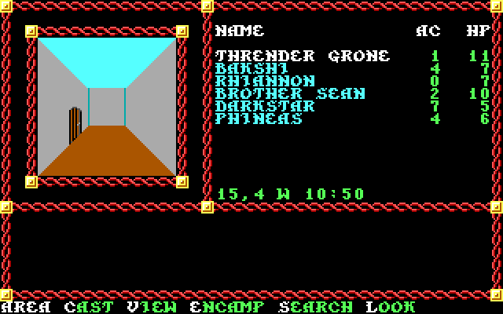
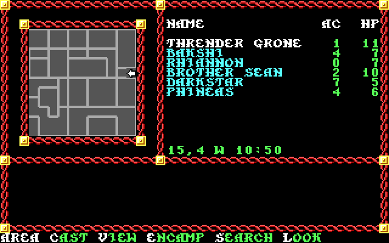
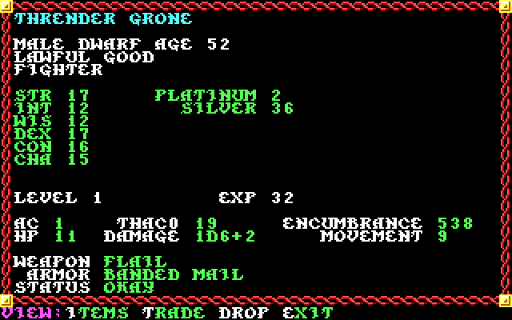
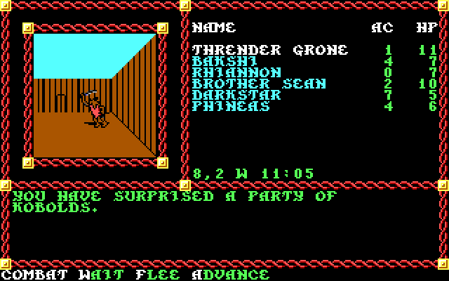
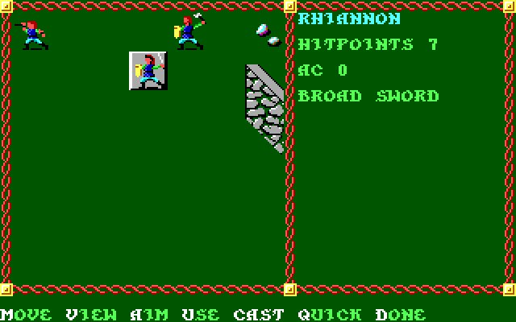
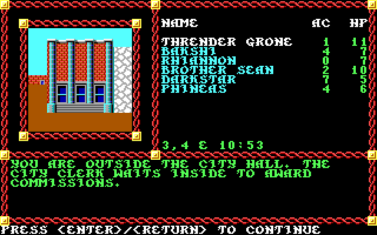
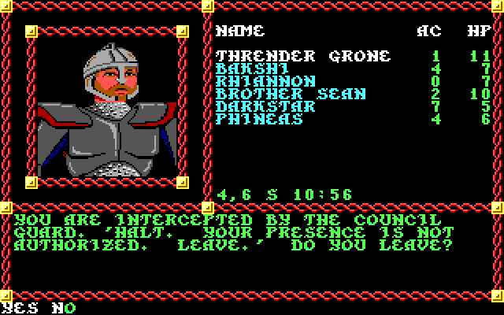
These pictures were produced by the project's own emulator running the original program with no display attached; the same mechanism is what lets a ported routine be compared with the original pixel for pixel.
open "build/Pool of Radiance.app" # run
app/build.sh # rebuild (needs only the Xcode command line tools)Saved games and characters are written to ~/Library/Application Support/Pool of Radiance/ in the original DOS
file formats (SAVGAMx.DAT, CHRDATxn.SAV and friends), so they can be moved to and from a DOS copy
of the game. The download this port was made from came with someone else's saved games in original/SAVE/;
copy those files into the folder above if you want a ready-made party to look around with.
The game is driven entirely from the keyboard, as it was on DOS. Menus along the bottom of the screen are chosen by the highlighted letter of each word, or by moving the highlight with the arrow keys and pressing Return.
| Where | Keys |
|---|---|
| Menus | The capital (highlighted) letter of a word picks it. , and . move the highlight left and right and Return accepts it. Esc backs out. Ctrl+S turns sound off and on. |
| Lists (races, spells, items to pick) | The original moves the highlight with Home and End (7 and 1) and changes page with Page Up/Page Down (9/3) or P/N; plain arrow keys did nothing. The Mac app also accepts Up and Down. This is the one place so far where the app deliberately differs from the DOS game. |
| 3D exploring | Up or 8 step forward, Left/Right or 4/6 turn, Down or 2 turn around. Area map, Cast, View character, Encamp, Search, Look. |
| No number pad? | The number row does the job. The game itself turns the digits into number-pad directions: 7 8 9 are up-left, up, up-right; 4 6 left and right; 1 2 3 down-left, down, down-right. Checked for walking, for pick-lists and for moving in combat. |
| Combat | Menu letters for commands. After Move (or when aiming), the digits 1–9 or the arrow keys with Home, End, Page Up, Page Down give the eight directions; moving into an enemy attacks it. Quick hands the character to the computer. |
| Title screens | Any key skips ahead; otherwise each stays for about five seconds. |
| Window | Ctrl+Cmd+F full screen, Cmd+Q quit. |
| Ctrl and Alt | As on the PC: Ctrl+S sound, Ctrl+P everyone on quick in combat. On the Mac, Option is the PC's Alt. |
| Windows | Alt+Enter full screen, F12 marks a problem, Debug menu as on the Mac. |
| Something looks wrong | Cmd+B (Debug > Mark a Problem) notes the moment in the session recording, keeps a screenshot and the saved games as they are. Debug > Show Recordings in Finder opens the folder. |
At start-up the game asks for a word from the cardboard translation wheel that came in the box. A scan of the wheel is in
original/__ Code Wheel __.pdf. The check itself is small: the program picks one of 13 entries at random, draws
two runes and a path style, and compares what you type with the entry's word. The 13 words, taken from the table in the
program's data segment, are:
A wrong answer draws a new challenge; three wrong answers end the program.
The Mac app skips this question and goes from the title screens straight to the main menu. To see the original
behaviour, start the app with the environment variable POOLRAD_WHEEL=1:
POOLRAD_WHEEL=1 "build/Pool of Radiance.app/Contents/MacOS/PoolOfRadiance"Everything in this section was read out of the shipped files.
START.EXE is compressed with Microsoft EXEPACK. Unpacked it is a 68,592-byte image with
561 relocations.GAME.OVR, a Borland overlay file (signature FBOV).
It holds 35 units, 197,641 bytes of code, with 406 routines callable from outside their unit. In the EXE each unit has a
small stub segment: a 32-byte header (file offset, code size, fix-up size, entry count) followed by one 5-byte
INT 3Fh trap per public routine. On DOS the overlay manager loads a unit into a buffer the first time one
of its traps fires and throws old units away when the buffer fills..DAX archives
(for example ECL1.DAX–ECL8.DAX hold the scripts for each group of areas, GEO*.DAX
the maps, WALLDEF*.DAX the 3D wall definitions). POOL.CFG holds five lines: display type,
sound type, game folder, save folder and a speed flag.The program's code segments after unpacking and flattening. Sizes are exact. The descriptions are my reading of the
strings found in each segment and of the routines as they were translated. Segment numbers are relative to the start of
the flat image; add 1000h to get the segment shown in the Ghidra listing.
| Segment | Kind | Bytes | What it appears to be |
|---|---|---|---|
| 0000 | resident | 352 | Main program: unit start-up calls and the top-level loop |
| 00BA | resident | 12,464 | Core game helpers: party roster display ("AC", "HP"), item list handling, healing |
| 03F1, 042B | resident | 1,792 | Start-up: reads POOL.CFG, opens GAME.OVR, memory checks |
| 0464 | resident | 10,832 | Low-level graphics and DAX loading (no strings; hot path) |
| 0709 | resident | 3,984 | Text output and prompts ("Press any key to continue") |
| 0802 | resident | 2,416 | Overlay file handling ("Please insert overlay disk") |
| 0899, 08AE | resident | 6,528 | Sound: note and waveform tables, PC speaker and Tandy drivers |
| 0A31–0AF8 | resident | 9,392 | Turbo Pascal runtime: Dos, Crt, Overlay manager, System |
| 0C7C | overlay 0 | 190 | Out-of-memory messages |
| 0C88 | overlay 1 | 2,062 | Title and credits |
| 0D09 | overlay 2 | 862 | Code wheel check |
| 0D3F | overlay 3 | 13,581 | Adventure script (ECL) interpreter, part 1 |
| 1090 | overlay 4 | 3,895 | Temple: healing services |
| 1184 | overlay 5 | 5,750 | After-combat results, treasure, duels |
| 12EC | overlay 6 | 1,949 | Shops |
| 1366–1843 | overlays 7–10 | 27,986 | Combat: turn loop, player commands, monster AI, battle set-up |
| 1A3D | overlay 11 | 1,562 | Combat map and sprite loading |
| 1A9F | overlay 12 | 14,510 | Status effects (127 small routines: poison, silence, training, ...) |
| 1E2A | overlay 13 | 15,474 | Attack resolution and damage |
| 21F2 | overlay 14 | 4,268 | Movement in the 3D world, doors and locks |
| 22FD | overlay 15 | 8,158 | Spell casting menus |
| 24FB | overlay 16 | 17,497 | Main menu and character creation |
| 2941 | overlay 17 | 9,189 | Saving and loading games and characters |
| 2B80 | overlay 18 | 2,299 | End game (the fight with Tyranthraxus) |
| 2C10 | overlay 19 | 11,026 | Character sheet and item screens |
| 2EC2 | overlay 20 | 3,685 | Encamp: resting and memorising |
| 2FA9 | overlay 21 | 8,795 | Money, encumbrance, trading |
| 31CF | overlay 22 | 14,261 | Spells: memorise, scribe, cast |
| 3592 | overlay 24 | 6,455 | Spell and area effects (clouds, poison damage) |
| 3726 | overlay 25 | 4,682 | Menus and yes/no prompts |
| 389F–3CA0 | overlays 28–34 | 17,057 | 3D view: wall sets, maps, sprites and symbols |
| Total code | 245,433 | including a few small units not listed above | |
This section was written as the work went on, unit by unit, and keeps that order. What it says about the game stands; where it says something was not translated or not tested yet, that was the state at the time. Everything has been translated since (Status).
These came out of comparing memory dumps taken a step apart and reading the decompiled map routines.
Three bytes in the data segment: DS:6AAD is the x coordinate, DS:6AAE the y coordinate and
DS:6AAF the facing (0 north, 2 east, 4 south, 6 west). They were found by saving the whole of memory before and
after one step west and one step south and searching for bytes that changed 15 → 14 and 4 → 5.
Every level is a 16×16 grid. The far pointer at DS:6A5C points to four 256-byte tables, indexed
y * 16 + x:
| Offset | Contents |
|---|---|
+000h | Wall type on the north side (high 4 bits) and east side (low 4 bits). 0 means open. |
+100h | Wall type on the south side (high 4 bits) and west side (low 4 bits). |
+200h | Event number for the square, 0 for none. Stepping on one runs part of the level's adventure script. |
+300h | Doors: two bits per direction (north in bits 0-1, east 2-3, south 4-5, west 6-7). 0 no door, 1 door, 2 locked door. |
The wall type number selects the picture drawn in the 3D view, so the same table gives both the look of a street and whether
you can walk through it. This is the level the bundled saved game starts in, drawn by re/mapdump.py from a memory
dump (-- and | are walls, == and : walls with a door, numbers are event
squares, @@ the party):
0 1 2 3 4 5 6 7 8 9 a b c d e f
+--+--+--+--+--+--+--+--+--+--+--+--+--+--+--+--+
0 |8c:95 95 95| :86 86|82 82|81 81 81|80 80|
+--+ +==+==+ + + + + + + + + + + + +
1 |95 95| |8b| |86 86|82 82|81 81 81:80 80|
+==+--+ +--+ +--+--+--+--+--+==+--+--+--+ + +
2 |8a| :85 85| :80 80: :80 80|
+ + +--+--+==+--+==+ + +--+==+--+--+ + + +
3 |8a| |89 89| |84 84: | | |80 80|
+--+ +--+==+ + + + + + + + + + +--+--+
4 : | :84 84| | | | @@|
+--+--+ +==+ +--+--+--+==+==+--+--+--+==+==+--+
5 |8d:8e| |88| |95|80 80| | |
+ +--+ +--+ + +--+--+ + + + + + + + +
6 |8d| : |95 95|95|80 80| | |
+ +--+==+--+--+--+ + + + + + + + + + +
7 |8d|87 87 87| :95 95:95|80 80| : |
+==+ + + + + +--+ +--+==+--+--+--+--+--+--+
8 | :87 87 87: |95| | |
+ + + + +--+--+ +--+ + + +--+--+--+ + +
9 | |87 87 87|90 90| | |83 83 83| |
+ +--+==+--+ + + + + + + + + + + + +
10 | |8f:90 90|11 | |83 83 83: |
+ + + + + + +==+--+--+--+--+--+--+--+--+--+
11 : :8f|90 90|92 92|92 92 92 92|92 92 92 92|
+--+--+--+--+--+--+ +--+--+--+--+ +==+==+==+--+
12 |92 92|92 92 92 92 92|92 92 92|92:92:92|92|92:93|
+--+ + +--+--+--+ + + +==+ +--+ + + +--+
13 |92|92|92|92 92 92|92|92 92|92|92:92|92|92:92 92|
+ +==+==+==+ +==+ +--+==+==+ +--+ + + + +
14 |94|92 92 92|92|92 92 92 92|92 92 92|92:92|92 92|
+==+ +--+==+ +--+--+--+==+--+--+==+ + +--+--+
15 |92 92|92 92 92 92 92|92 92|92 92 92 92|92 92 92|
party at 15 4 (== or : marks a wall that has a door; numbers are event ids)
The party's starting streets (top right) are closed in by three locked doors. re/route.py plans a shortest
path over this grid and writes the key presses for it, which is how the test scripts walk to a particular square.
Every picture, map, monster table and script is a numbered block inside a .DAX file:
| Part | Contents |
|---|---|
| Word | Size of the directory in bytes |
| Directory | 9 bytes per block: id (1 byte), offset from the end of the directory (4), unpacked size (2), packed size (2) |
| Blocks | Run-length packed data. A control byte of 0 to 126 means "copy the next n+1 bytes"; 129 to 255 means "repeat the next byte 256−n times". |
A picture block starts with a 17-byte header (height in pixels, width in 8-pixel columns, x, y, number of frames, 8 spare
bytes) followed by the pixels, four bits each, two to a byte. The title screen is 17 + 200×40×4 = 32,017 bytes
unpacked and 9,258 packed. re/dax.py reads these files on its own, without the game:
python3 re/dax.py list original/TITLE.DAX
python3 re/dax.py pics original/CPIC1.DAX /tmp/pics # every picture block as a PNG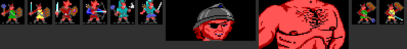
CPIC1.DAX, HEAD1.DAX and BODY1.DAX: 24×24 combat figures, and a
portrait, which the game stores as a separate head and body.The large scene pictures (PIC*.DAX, SPRIT*.DAX, FINAL5.DAX) are animations with their own
layout, read from the loader at 489F:00A2: a frame count, then for each frame a delay, height, width,
position and the pixels. In the PIC and FINAL archives every frame after the first is stored as
the XOR difference from frame one. Two frames that differ only in a blinking eye are then almost all zeros, which the
run-length packing shrinks to nearly nothing.
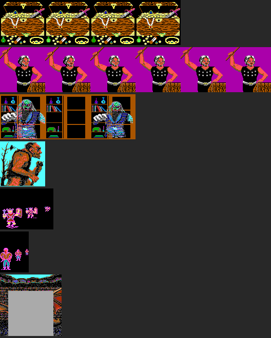
The gallery page shows all 739 pictures the extractor can read, from 51 archives.
One oddity turned up while matching the original byte for byte: before opening an archive the game probes for the file and
stores Turbo Pascal's I/O result code in DS:49CE. After a failed probe that word holds 103 ("file not open",
from closing a file that never opened), and it stays 103 until the next successful probe.
The first-person view is not 3D in the modern sense. Nothing is scaled, rotated or projected. The picture window is a
grid of 11×11 tiles of 8×8 pixels (88×88 pixels), and the renderer (491C:05FD) builds the
scene by stamping ready-made blocks of tiles.
A wall type, the number 1 to 15 stored in the level map, is a recipe of 156 tile numbers taken from the area's
WALLDEF block. Those 156 numbers hold ten pre-drawn shapes:
| Piece | Size in tiles | What it shows |
|---|---|---|
| 0 | 1 × 2 | a wall facing you, three squares away |
| 1, 2 | 1 × 4 | a side wall on the left / right, far away |
| 3 | 3 × 4 | a facing wall two squares away |
| 4, 5 | 2 × 8 | a side wall left / right at middle distance |
| 6 | 7 × 8 | a facing wall right in front of you |
| 7, 8 | 2 × 11 | the side wall next to you, left / right |
| 9 | 1 × 2 | a filler for the edge where a far wall ends |
2 + 4 + 4 + 12 + 16 + 16 + 56 + 22 + 22 + 2 = 156. To draw the view, the renderer first paints sky, two thin horizon bands and floor as four plain rectangles. It then looks at three rows of squares ahead of the party and works from the farthest row to the nearest. In each row it stamps the walls that face the party, then the side walls, each at a column and row read from two ten-entry tables. Because nearer pieces are stamped later, they simply cover whatever is behind them; that ordering is the whole of the hidden-surface logic. Tile number 0 in a recipe means "leave what is there", which is how doorways and arches show the street beyond.
A door, a brick wall and a hedge are therefore just three recipes, and the artist drew each of them ten times, once per shape. It also explains why turning or stepping is instant with no in-between frames: there is nothing to animate, only a different set of blocks to stamp.
Loading an area's look takes three files. The level map is a 1,026-byte block from GEO: two header bytes and
the four 256-byte tables. Wall recipes come from WALLDEF in groups of five wall types (780 bytes), one group
per wall-set slot, so slot 1 supplies wall types 1–5, slot 2 types 6–10 and slot 3 types 11–15. The tile
numbers in a recipe are written as if for the first slot, so the loader shifts them to the numbers of the slot actually
used and then loads that slot's tiles from 8X8D.
The red twisted-cord borders around every pane are tiles too: three symbols from the fixed set (a corner, a vertical piece and a horizontal piece), stamped round a rectangle of character cells.
The tiles themselves are frames of ordinary pictures. There are five "symbol sets", each a picture with one 8×8
frame per tile: four loadable sets from the area's 8X8D archive (tile numbers 1–45, 46–115,
116–185 and 186–255) and a fixed fifth set (256–286) for the Area map. Putting a tile on screen
(4CA0:015D) is just merging one frame into the back buffer with the transparent colour honoured.
Two other details. In every area except two, the map wraps round at its edges: looking off the east side shows the west side, which is why the 16×16 levels never show a void. And the overhead Area map is the same tile stamper with a 16-tile set, one tile for each combination of walls on a square's four sides, plus an arrow for the party.
The command menu (31F2:0989) and the move that follows it (31F2:0D6D) are separate: a script runs
between them, which is how an area can react to where you are about to go. Three things worth knowing:
Time is seven counters, and they live in the scripts' variable space (script addresses 49C6–49CC),
which is how an adventure script can ask what time it is:
| Counter | Unit | Rolls over at |
|---|---|---|
| 0 | tenths of a minute | 10 |
| 1 | minutes | 10 |
| 2 | tens of minutes | 6 |
| 3 | hours | 24 |
| 4 | days | 30 |
| 5 | months | 12 |
| 6 | years | 256: at that point every character's age goes up instead |
The unit names are read from how the status line prints them (hours, then tens of minutes and minutes) and from the
roll-over values; counters 0 and 4–6 are named by inference. Whenever the clock advances (3EC2:03D5), the
game also walks every character's list of status effects and counts their remaining durations down by the same amount,
removing the ones that run out. (Both halves are C now: port/gametime.c.)
Camp, then Rest, opens with a time already filled in. The routine behind it (32FD:0000, now
camp_rest_needed in port/camp.c) works it out for each character and the party gets the longest.
A memorised-spell slot holds a spell number; when the top bit is set the spell has been picked for memorising but
not yet learned. The rule, read straight from the code:
DS:31FB, sixteen bytes per spell);The test for this casts away a Sleep spell in camp, picks Read Magic to memorise, and opens Rest: both the original and the
translation show REST TIME: 00:04:15. The hours are also stored in byte 2Ch of the character.
The two running totals are single bytes in the original and would wrap past 255; the translation keeps that.
Camp, Magic, Memorize (32FD:090A, now camp_memorize in port/camp.c) works on the 21
spell slots of the character record. Every spell has a sixteen-byte entry in a table at DS:31FA that begins
with its class (0 cleric, 1 magic-user) and its level. The character's allowance for each class and level is a byte at
B1h + class × 3 + level, so the game only has room for three spell levels per class. "Can memorize"
is that allowance less the slots already holding such a spell, learned or merely picked.
A picked spell is written into the first empty slot with its top bit set, and the slots are then sorted by spell number,
which is why the lists always come out in the same order. Answering No to "Memorize these spells?" empties every slot
that still has the top bit and cancels the sleep owed. Casting can be switched off for a whole area by one word of the
game's data block (1CAh): "cannot cast spells in this area". A character who is not fit gets "is in no
condition to" cast, memorize or scribe.
The table at DS:31FA has 56 spells of sixteen bytes each, with the names in a second table
(DS:28E9, 41 bytes each). Byte 0 is the class, byte 1 the level, and byte 0Ah the number of the
status effect the spell leaves on its target, or zero for spells that are over at once (Cure Light Wounds, Magic
Missile, Fireball, Knock). Bless leaves effect 1, Shield 11h, Invisibility 19h, Haste 27h, Slow 2Ah, and so on. The last
entry is Restoration, a seventh-level cleric spell no character can reach in this game; it is there for the temple.
Camp, Magic, Display (32FD:0FBC, now camp_display) walks each character's list of effects and
names them by looking the effect number up in that table. Fourteen effects that no spell in the table leaves have names
written into the routine: Feather Fall, Helpless, Prayer, Cause Disease, Dreaded Mummy Disease, Repulsed, Poisoned,
Regenerating, Fire Resistance, Invisible, Camouflaged, Displaced, and two for a magic book, "Studying Manual of Bodily
Health" and "Training with Manual of Bodily Health". If an effect ought to have a spell and none is found, the programmers
left themselves a marker: the line reads Funky-- and the effect number.
The table also settles something on the character sheet, and not in the game's favour. The sheet doubles the movement shown for a character with effect 2Ah and halves it for 27h. By this table 2Ah is Slow and 27h is Haste, so the sheet seems to show a hasted character as slower and a slowed one as faster. That was first read from the code and the table; a doctored save has since shown it on screen in the original: a slowed elf shows Movement 18 instead of 9, and a hasted half-elf shows 4 instead of 9. The translation does what the original does.
Scribe (32FD:0B5B) is Memorize for scrolls: it marks a spell on a scroll to be copied into the spell book
during the next rest, and refuses a spell already known, already marked, or of a class and level the character has no
allowance for. One of its messages is misspelt in the original, "You are already scibing that spell", and stays that way.
The resident character unit (10BA) holds the tabletop rulebook's ability tables, written out as chains of
range tests instead of data. They are now in port/chr.c. Everything hangs on one conversion
(10BA:11EA): Strength becomes a single scale where 3 to 17 are themselves, 18 with its percentage becomes
18 to 23 (none, 01-50, 51-75, 76-90, 91-99, 00), and 19 to 25 become 24 to 30.
| Strength | To hit | Damage | Carrying |
|---|---|---|---|
| 3 | -3 | -1 | -350 |
| 6-7 | -1 | 0 | -150 |
| 16 | 0 | +1 | +350 |
| 17 | +1 | +1 | +500 |
| 18 | +1 | +2 | +750 |
| 18/01-50 | +1 | +3 | +1000 |
| 18/51-75 | +2 | +3 | +1250 |
| 18/76-90 | +2 | +4 | +1500 |
| 18/91-99 | +2 | +5 | +2000 |
| 18/00 | +3 | +6 | +3000 |
That is the first-edition table, and it explains the doctored dwarf with 18/00 Strength showing 1D6+7 with a
flail: one from the weapon and six from the table. Dexterity has two tables of its own, for armour class (15 to 18 give
1 to 4) and for missile fire (16 to 18 give 1 to 3). The tables go on past what a player character can have, up to 25,
for monsters and magic. Three of these routines return whatever happened to be in a register for values outside their
ranges (a percentage over 100, say); for those inputs the translation hands the call back to the original rather than
guess.
The same batch brought over the message helpers every screen uses ("name" with a line of text beneath, the one-line notice, clearing the message area), number-to-text, counting who can still act on each side of a fight, the Guard command, the level a spell is cast at (cleric or magic-user level, but a flat 6 when a flag that seems to mean "from a scroll" is set), and the test for a missile weapon in hand.
One routine (10BA:0BB8, now chr_recalculate) rebuilds a character's fighting numbers from
scratch whenever something might have changed; the combat test calls it 137 times. It never adjusts a number in place.
It starts from the base values kept in the record and walks the item list.
DS:5582 whose first byte is a slot
number. A readied item's address goes into the matching one of thirteen far pointers at CCh: weapon,
shield, armour and so on, with two slots for rings.The ordinary party shows none of this, so the test (t_fake4) doctors all six characters: a ring +2 takes
the dwarf from AC 1 to -1; banded mail +1 with a ring +3 gives the half-elf only the armour's one point and movement 12;
the elf gains a point of THAC0 from a long sword; 6000 gold weighs 1639 with a Bag of Holding and 6093 without, and
either way movement falls to 3; a shield +1 takes the thief from AC 4 to 2. The original and the translation agree on
every sheet.
A profile of the combat test showed the fight spread over about eight units, all original code at the time (all translated since): the turn
and command logic (26B0, 2843, 2184, 2588), attacks and spell
effects (2E2A, 3941), the battlefield display (4AFB, 4A3D) and the
dice-and-effects rules (4592). The plan is bottom-up, starting with the small routines everything else
calls.
The first of them is the dice roller (4592:0DE3, now roll_dice in port/rules.c):
add up count rolls of Random(sides) + 1. One short fight calls it 1,366 times. It still draws its
numbers from the original's random generator, so both builds roll the same dice and the comparison stays exact. With it
came the helpers that strip groups of status effects from a character, one of which removes Invisibility.
Next came the two routines that manage status effects in a fight. Removing an effect (4592:0026) first
lets the effect's own routine undo what it did, then unlinks and frees the node. The other (4592:0160) is
asked "does effect n apply to this character now?" 2,361 times in one short fight, for some seventy different
effects. For most the answer is whether the character carries it. Four are area effects (Silence 15' Radius, the two
10' Radius protections and Prayer): any party member carrying one will do, provided this character stands within
reach, six squares for Prayer and one for the others. The ordinary party has none of these, so the combat test is run
a second time on a doctored save with Prayer and a radius protection running; the reach test then runs natively, with
between one and nine combatants in range, and the fight still matches the original.
The battlefield keeps its own table: combatants are numbered from 1, with a far pointer to each at
DS:65B9 and four bytes each at DS:5F27 holding x, y and size. The four small routines that
read it are native.
Distances and lines of sight on the battlefield come from one small set of routines (4A3D:0000,
01A0, 02CC), and they turn out to be Bresenham's line algorithm, the standard way to walk a
straight line across a grid using only whole-number additions. Give it two squares and it steps from one to the other,
choosing at each step between a straight move and a diagonal one by the sign of a running error term. The game adds two
things of its own: a distance counter in half-squares, where a straight step costs 2 and a diagonal costs 3 (the
tabletop rule that a diagonal is a square and a half), and the compass direction of each step, looked up in a
nine-entry table. One short fight sets up 6,394 lines and takes 16,142 steps along them. The list of who is within
reach is then sorted nearest first (4A3D:002E).
Line of sight (4A3D:0422) is built on that line walk. The battlefield map is fifty squares to a row,
and each kind of tile has two heights in a table at DS:2745: how high an observer standing on it looks
from, and how high it blocks. The routine walks from one square towards the other and stops if a square blocks higher
than the eye level or the range runs out. It steps a second line alongside the first, evidently meant to slide the eye
level from the height at one end to the height at the other, but both ends are given the starting square's height, so
the eye level never changes. Whether that is a slip or a simplification, the translation does the same. A short
fight asks for line of sight 3,196 times.
On top of line of sight sits the question combat asks most: who can be reached from here
(4A3D:0909)? The battlefield is 50 squares by 25. A creature has a size, and size decides the squares it
covers: one, two (one above the other, or side by side) or a block of four. The routine tries every square the
attacker covers against every square each combatant covers. A target counts if it lies in the quarter-circle the
attacker faces (4A3D:057B; eight compass directions, each tested with a pair of diagonal inequalities,
or "all round") and a clear line exists; the shortest such line gives the distance. The result is a list of combatant,
distance and direction, nearest first, which the attack, movement and spell code then read. With this the whole
line-and-reach unit is native.
The display side of the fight has been started as well (4AFB). The map in memory begins with a short
header (the square shown at the top left of the seven-by-seven view, and a flag that switches blocking off) followed by
the tiles. A second grid of the same size at DS:60DB records which combatant stands on each square, so
"what is here?" is two array look-ups. Six small routines are native so far: where each combatant falls in the view,
what is at a square, whether a position is inside the view, and redrawing one combatant's square.
The rest of the battlefield display unit followed, eleven routines, which makes 4AFB wholly native
(port/combat.c). What they show about how the screen works:
One oddity is kept. The routine for a fall starts with a loop that looks meant to search the list of the fallen for the
character, but it tests the same entry eight times over. And one of the eleven, putting a combatant on the field
(4AFB:10A7), is not called at all in either combat test, so at this point it was translated but not yet verified (later tests reach it).
The turn logic has been started (26B0, now port/fight.c) with three routines that run on
every computer-controlled move. One decides how a move ends: a fighter with nothing left to do stands guard, unless
they hold a missile weapon. One has a computer-run cleric look for undead to turn, once per fight. The third is the
glance at the keyboard that makes quick-fight interruptible: Space takes the player's characters off automatic, and
Alt-M toggles a setting shown as "Magic On" / "Magic Off", whether the computer may cast spells on the player's behalf.
Four more of the computer's decision routines followed, and they show how the game's opponents (and your own characters on quick-fight) think:
The judge routine itself and the morale check came next, with the helpers they lean on.
The attack unit (2E2A) has been started from its small, busy routines:
4592:02FA, translated later as effects_event) that
announces an event to every effect a character carries and lets each answer through a global. "May I be targeted?"
is event 1 and a veto flag: that is how invisibility works, with no special case in the targeting code.The attack routine itself (2E2A:1406) is now native too (fight_attack), taken from the
assembly because the decompiler had split it into fragments. In order, an attack goes like this:
The three routines the attack calls for its arithmetic are native as well:
4592:0CB7). Attacking ends the attacker's invisibility. A twenty-sided die is rolled: a
1 misses whatever else is true, and a 20 is turned into 100 so that it cannot miss. The roll plus the attacker's
to-hit number must reach the armour-class figure. The area's script can add a bonus or penalty for each side, which
is how a designer could make one place's fights harder without touching the monsters.2E2A:1B1E). A missile weapon's range divided by three is its short range. Past that the
target is 2 harder to hit and past twice that 5 harder, the rulebook's medium and long range.2E2A:0191). The attack's dice plus its bonus. A backstab multiplies the whole by two plus
a quarter of the thief's level. The listing of this routine stopped short of its end because the text "-Backstab"
follows it in the code; its last bytes were read directly.In every one of these the dice still come from the original's random number generator, so the two builds roll the same numbers and a fight can be compared blow for blow.
The routine that reports an attack and applies the damage (2E2A:02F9) was never recognised as a routine
by the disassembler, because a block of text sits in front of it, so it was disassembled separately, straight from the
game file. It is where the fight's narration lives: "Attacks", "-Backstabs-", "slays helpless", "Hitting for 5 points
of damage", "(from behind)", "with one cruel blow", "and Misses", "lost a spell", "goes down", "and is Dying",
"is killed". Taking damage breaks concentration, so a spell being cast is lost. What the damage does to the character
is decided one level down (10BA:2228, now chr_apply_damage): damage that only just uses up the hit
points leaves the character unconscious, one to nine points beyond that leaves them dying, with the excess kept as a
bleeding count, and ten or more beyond kills outright. That is the tabletop "dead at minus ten" rule.
Two more helpers built on the reach scan are native: the distance between two combatants (a scan with blocking switched off, then the target's entry halved from half-squares to squares) and the list of a combatant's enemies within a given range, nearest first, which is what guard strikes and the computer's choice of target read.
How many attacks a combatant gets (2E2A:0D23) shows a neat trick. The rulebook gives some fighters
"three attacks every two rounds", and the game stores every attack rate doubled: 2 means one a round, 3 means three per
two rounds. Each round the rate is halved, and on odd-numbered rounds the half is rounded up, so a rate of 3 gives two
attacks, then one, then two. Bows use their own rate of fire and are capped by the arrows left.
Around the attack sits a wrapper (2E2A:1884, now fight_strike). The target turns to face
its attacker, unless three or more are already on it, which is exactly what lets a crowd get at someone's back. The
attacker turns, a missile is shown flying, and the attack runs. Ammunition used comes off its stack. A thrown weapon
that is used up is copied to a list first, so it can be picked up when the fight is over.
This was the first translation in a long while that the comparison rejected: with it in place all three test fights went differently from the original within two blows. The cause was the decompiler, which had labelled the "missile flies" call as a routine in another unit taking one argument. The assembly shows a call within the same unit taking three (attacker, target, missile). With the wrong call the stack was left unbalanced and the fight drifted. It is a reminder of why every routine is checked against the original rather than trusted on reading.
The effects hub (4592:02FA, now effects_event) is the largest routine translated so far
by size, nearly two thousand bytes, and the simplest by content: it is a table. For each of twenty events there is a
fixed list of effects, and each is asked in turn whether it applies. Because it was 140 numbers, the table was
extracted from the assembly by a script, not typed. A few rows, with the spell table as the key:
| Event | Effects consulted |
|---|---|
| Being chosen as a target | Invisibility, Blink, and two more (3Fh, 47h "Invisible") |
| Attacker's to-hit roll | Bless, Curse, Cause Blindness, Bestow Curse, Prayer, and four unnamed ones |
| About to be attacked | Cause Blindness, Shield, Protection from Evil and from Good (both the personal and the 10' Radius kinds), Stinking Cloud |
| Morale | Bless, Curse, Charm Person |
| Movement and attacks per round | Haste, Slow, and one more (3Ah) |
| The helpless test | Snake Charm, Hold Person, Sleep, Helpless |
This is how the game keeps its rules apart from its spells. The attack code knows nothing about Bless; it rolls a die into a global and announces "a to-hit roll is happening", and Bless, if present, adds one. Adding a new effect to the game meant writing its routine and adding its number to the right rows.
The effects themselves are 113 small routines in one unit (2A9F, about ten thousand bytes in all), each
reached through the handler table. A hundred and one are native so far (port/effects.c). Each is one rule, and
reads like the spell description:
| Effect | What its routine does |
|---|---|
| Bless | +5 to morale, +1 to the to-hit roll |
| Curse | -5 to morale (not below zero), -1 to hit |
| Bestow Curse | -4 to hit and -4 on saving throws |
| Slow | halves the movement and attack rate |
| Invisible | cannot be chosen as a target; -4 on a roll against them |
| Blink | once the blinker has acted this round, it cannot be targeted and a roll against it fails |
| Ray of Enfeeblement | a quarter off the damage the victim deals |
| Resist Fire, Resist Cold | half damage from that element and +3 on the save |
| Helpless, Snake Charm, Hold Person, Sleep | wipe whatever the character meant to do |
| Friends | on ending, puts Charisma back to the value saved in the effect's node |
| Shield | armour class no worse than 3, +1 on saves, and Magic Missile does nothing |
| Cause Blindness | -4 to hit, armour class 4 worse front and rear, -4 on saves |
| Elf, half-elf (6Bh, 7Ch) | sleep and charm fail 90 times in 100, or 30 in 100: the rulebook's racial resistances, implemented as permanent effects |
| Magic resistance (69h, 6Ah) | a spell fails 50 or 15 times in 100, shifted by 5 for each level the caster is above or below 11 |
| 77h | hit only by magic weapons, unless the attacker is a monster of four hit dice or more |
| 68h | avoids missiles 60 times in 100 ("Avoids it") |
| 6Eh, 70h | no damage at all from cold, or from fire |
| Protection from Evil, from Good | if the attacker's alignment is one of the three evil (or good) ones: -2 on their roll, +2 on the save |
| Invisibility | cannot be targeted unless the attacker has Detect Invisibility; -4 on the roll either way |
| 62h | regenerates 3 hit points at a time |
| 44h | a paralysing touch that does not work on elves (the ghoul's, by the rulebook) |
| 7Bh | no damage from ordinary weapons, half from silver, full from magic |
| 7Dh | immune to charm, sleep, paralysis and poison (the undead) |
| Prayer | the effect remembers which side cast it: that side gets +1 to hit and on saves, the other side -1 |
| Displaced | the first attack on the creature each round misses; a bit in the effect's node remembers that the miss has been used |
| Silence, 15' Radius | no casting and no using items this turn ("is silenced") |
| Fire Resistance | two points less per die from fire, +4 on the save, and non-magical fire does nothing |
| 5Bh | Magic Missile "is unaffected", and no damage from electricity |
| Haste | doubles the movement and attack rate; the first time, the character "ages" and a year is added, as the rulebook charges |
| 12h, 1Ah | the racial enmities, as lists of monster names: +1 to hit KOBOLD, GOBLIN and their leaders; +1 to hit ORC, GOBLIN, HOBGOBLIN and their leaders, plus two named characters, GAGOOL and MACE |
| 2Fh | a large attacker named OGRE, TROLL, FIRE GIANT or HILL GIANT is at -4; the loop runs three entries past the end of its list |
| 5Ah (dwarves, halflings) | a bonus on poison-kind saves from Constitution, +1 at 4-6 up to +5 at 18-20 |
| Slow Poison | when it ends, anyone still poisoned "dies from poison" |
| Mirror Image | the effect counts the images left; a die with one more side than that is rolled, and anything but a 1 means an image took the blow: "lost an image" |
| Cause Disease | one hit point lost every 10 units; with one left, the victim becomes Helpless |
| 2Bh | a wasting disease: "is weakened", a point of Strength lost every 60 units, Helpless below 4 |
| 4Ch | a grab: the attacker holds on and the target is rooted to the spot |
| Animate Dead | when it ends, the animated creature "collapses" |
| Charm Person | the victim changes sides and fights on its own; the old side is kept in a spare bit of the effect's node and restored when the charm ends |
| Stinking Cloud | "is coughing": no items, no spells, armour class two worse |
| 57h, 39h | the mummy's touch gives the Dreaded Mummy Disease and a rot with 1d6 stages; at each stage "Rots..." and two points of Charisma go; at the last, "Dies rots away" |
| 4Dh | a hold: "is held fast", unless the target's Strength is 19 or more |
| 63h | a last effort: a dying or unconscious combatant gets up with a few hit points, then "Falls dead" 1d4+1 later |
| 51h, 52h | fear: every enemy saves or is "paralyzed with fear"; weaker ones of 4 or 5 hit dice are only "weakened by fear"; humans and a side with more than five still standing save more easily against the second kind |
| Strength, Enlarge | when one ends, Strength falls back to the best of any others still running; the score is packed in a single byte, below 66h meaning 18 with a percentage and above it 19 to 25 |
| 4Bh | the holder of a grab "Sucks some Blood" each turn, 1d4, until the victim falls or a set total has been drained |
| 49h, 4Ah | a creature that lands both claws "Rakes..." with two extra 2d4 attacks; a creature holding someone hugs for 3d4 each turn until the victim falls |
| 7Eh | this creature cannot attack anyone carrying a particular kind of readied item (a ward; the name words are not yet identified) |
| Manual of Bodily Health | "is hardier": a point of Constitution, and the extra hit points the new score allows for every class level |
The resistances show one more shared number: a byte saying what the damage being dealt is made of, one bit for fire,
one for cold and one for a third kind, so that an effect can halve only its own element. To exercise these, the test
fight is run once more on a party carrying a spread of them (t_combat4); the two builds still agree blow
for blow. The first version of that fight was a poor test: the kobolds hardly ever hit, so the effects that react to being hit never
ran. The party's armour was taken off and its hit points raised, and now Shield is consulted 27 times, blindness 13,
"magic weapons only" 10. Still not reached: anything that reacts to spells or to fire and cold (magic resistance, the
immunities, the racial resistances), since kobolds cast nothing.
The saving throw (4592:0D63, now rules_saving_throw) is the last of the big shared rules.
A twenty-sided die: 1 always fails and 20 always succeeds. Otherwise the character's bonus from protective items and
any adjustment are added, the character's effects are given the chance to change the total, and it is compared with
the character's own target number for that kind of save, of which the record holds five.
Poison and paralysis sit directly on it. A poisonous attack makes its victim save or be told "is Poisoned" and then "is killed"; four strengths exist, with the save at +4, +2, 0 and -2. A paralysing attack makes its victim save or be paralysed for 2d8, or for 1d9+10. Both belong to a creature's second kind of attack, the bite or sting that monsters have besides their claws, which is why nothing in the party could trigger them. The doctored characters were given a second attack as well, and the fight now includes one poisoned and one paralysing strike, with the two builds still in step.
Damage that is not a weapon blow has its own routine (4592:1344, now rules_damage): spells,
breath, gas, a monster's burning touch. The victim's resistances and immunities are consulted, a saving throw may cancel
or halve what is left, and the result is reported with its source: "takes 12 points of damage from Fire", or Cold,
Electricity, Acid, Magic. Two effects that use it are native: a touch that burns for 2d10 and one that eats with acid
for 1d4.
Getting up again has its own routine (4592:1869, now rules_get_up): the combatant must fit
back on the field where it fell, and then "gets back up", or for the other side "stands up and grins". The troll is
built from two effects around it. One fires when the troll goes down to anything but fire or acid, and sets the second
to go off in 3d6; the second stands it up again with every hit point restored. Healing (4592:175D) is
native too: natural healing helps anyone below their maximum, magical healing is refused to a victim of the Dreaded
Mummy Disease, and a healed character who was dying becomes merely unconscious. Outside a fight they then come round
at once; inside one they stay down until it is over.
Testing the troll's trick took five attempts, and one of them is worth admitting to. To make sure a doctored character would fall, the whole party was made so bad at fighting that the fight could not end, and both builds ground away at it until one hit its instruction limit and the other had run for most of an hour. New tests are now tried first on the translated build alone, which is fast, under a time limit. The version that works gives the leader one hit point and the troll's effect: he falls in the fight, the party rests an hour afterwards, and he is back on his feet with 90 hit points in both builds.
Racial abilities being effects explains the save files: every character had a few effect nodes with numbers that belong to no spell. They are things like "is an elf".
Each attacker also adds to a running measure of how surrounded the target is: 0 for standing in front of it, up to 4 for directly behind. That total is what later lets someone attack the rear armour class.
The ordinary path is verified (16 attacks in the test fight, identical to the original). Not reached by any test: the helpless rule, the large-target dice and the backstab. A doctored fight with the party's leader made helpless still matches the original, but the kobolds never got to him, so it does not cover the rule it was built for.
The battlefield itself is generated from the dungeon around the party (2843:0810): a strip of thirteen
dungeon squares by five is turned into blocks of ground tiles, with wall, corner and doorway tiles chosen from what each
dungeon square has on its sides. Only its two wall tests are native so far. The tile-choosing routines are long
decision trees with branches that leave a variable unset, so they are waiting for a careful reading.
This one was looked at properly because, unlike the cosmetic slips, it could affect play. What the code does, as far as reading and memory dumps show:
13h). In the
test fight it is 1 for every kobold and 0 for every party member, so only the party's own people leave bodies. The
list has room for eight entries, which is the largest a party can be.4AFB:0E11) begins with a loop from 1 to 8 that is
plainly meant to ask "is this character already on the list?". But the entry it looks at is not numbered by the loop
counter. It is numbered by DS:70C7, a scratch counter that belongs to the picture-drawing unit and holds
whatever that unit last left in it (12 at the moment one dump was taken, which is past the end of the list). So the
test reads the same unrelated memory eight times and, short of coincidence, never finds anyone.DS:6715). When a
character gets back up their entry is blanked, but the count is not taken down; it returns to zero only when a new
fight begins. Nothing checks the count against eight.DS:6715, which is the count
itself, followed by DS:6716, the pointer to the battlefield map that every drawing, movement and
line-of-sight routine reads.So the risk, if this reading is right: in one long fight where party members go down, are brought back and go down again nine times in total, or where a fallen character is "felled" again while already down (the very case the broken check was there to stop), the ninth entry overwrites the map pointer and the battlefield is corrupted. An ordinary fight comes nowhere near this, which would explain how it shipped.
One thing has since been settled by translating the damage routine: the fall routine is called from exactly one place there, at the moment a hit leaves its target unable to act, and a combatant who has fallen is taken off the field, so an ordinary attack cannot fell the same character twice. That leaves spells that damage an area, and characters who are revived and fall again, as the ways the list could fill.
The non-weapon damage routine is a second caller of the fall routine, with the same guard: it only calls it for a victim who has just become unable to act. So whether the list can overfill now turns on one question, still open: can spell or breath damage be aimed at someone who is already down? That is decided by the spell-targeting code, not yet read.
The get-up and healing routines add two more facts. A monster that rises again in a fight, the troll, leaves no body and so never touches the list. And a party member who is healed while down stays down for the rest of that fight; the "coming round" effect only runs once the fight is over. So "revived and felled again in the same fight" does not look possible for the party after all, which leaves spells aimed at the already-fallen as the one route still unexamined.
Reproduced in the original. With the test tools that came later (a doctored save plus edits that stay armed during a fight) the overrun was made to happen in the untouched original. Every party member was given the troll's rise-again effect, its timer was held at one, and hit points were held at one, so that people fell, rose and fell again. After the ninth fall the original's memory shows exactly what the reading predicted:
DS:6715 on top of
the count and the first three bytes of the map pointer;716E:5500, which is not one;The original did not crash. It played on to round 22 and finished the fight with its map pointer pointing at whatever lay there. On a DOS machine nothing stops that; what happens next depends on the contents of memory at the time. The translated build, in its own run of the same scenario, stopped with Turbo Pascal's runtime error 204, "invalid pointer operation".
One more route was looked at afterwards. An effect exists (63h, "a last effort") that stands a dying or unconscious combatant up again in the middle of a fight and then makes it fall dead a few rounds later, which is precisely a second fall. But nothing in the program ever puts that effect on anyone; the only references to it are its own routine and the two event lists. It can only come from the monster data files, as a monster's built-in ability, and monsters leave no body.
Two cautions about this experiment. First, it is not an ordinary game: no party member can have the troll's effect, and from what has been read so far a party member who goes down stays down until the fight is over. A party is at most eight strong, which is exactly the size of the list, so in normal play the ninth entry would need someone to be felled a second time, and no way of doing that has been found. The one route still unread is spells that might be aimed at the fallen. So: a real flaw, shown in the original, and so far not shown to be reachable by a player. Second, the two builds do not stay in step in this test, and it is not in the comparison suite: the standing edits fire on a count of machine instructions, which fall at different moments of the game in the two builds, and after the overrun both are in any case reading through a garbage pointer.
An item does not store its name. It stores three word codes (bytes 2Fh–31h) into a table
of 21-byte words at DS:10A7, and the name is rebuilt, last code first, every time it is shown
(10BA:0442, now chr_item_name): "Banded" + "Mail", "Magic User Scroll" + "With 3 Spells". Byte
35h has one bit per word saying that word is still hidden, which is all "unidentified" means: a long sword +1
whose "+1" word is hidden reads "Long Sword". Three things can go in front: " Yes " or " No " for readied, in the item
list; the count, for a stack, with an "s" added to the right word ("11 Darts"); and a star if anyone in the party has
Detect Magic running and the item is magical. The doctored save for this gives the dwarf Detect Magic, and the
half-elf's sword, mail and ring each get their star.
The picker behind "Trade to? Select Exit" (10BA:2C48) is native as well: Home and End walk a highlight
round the party, Select or Enter chooses, Exit returns nobody.
Drop (3C10:24A7, now sheet_drop_money) builds a pick-list of the kinds of wealth the character
carries, asks "How much Gold will you drop?", subtracts it, and goes round again until nothing is left or Exit is chosen.
A doctored character carrying all seven kinds tests it: a piece of jewelry, twenty gold and all the gems are dropped and
both builds agree on every frame.
Trade (3C10:2156) is the same screen with a "Trade to?" question in front, and it has a flaw that kept it in
original code for a while (it is C now; the hook passes in the stack byte the original would read). The decompiler had split the routine into four fragments, so it was read from the assembly, and
there the fault shows: one flag decides whether to ask "Trade to?" again, and on one path it is read without ever having
been set. That path is: pick someone to trade with, then leave the coin list without trading. What happens next
depends on whatever the previous routines happened to leave in that byte of the stack. To reproduce that, the translation
would have to reproduce the stack contents left by every earlier routine, native or not. This is the third such case,
after the script opcodes ECL CLOCK and SPELL, and all three wait for the same piece of work.
The routine that moves the party selection (3C10:27DF) is also native now: Home goes to the character
before the selected one and wraps from the leader to the last; End goes to the next and stops at the last.
The last camp screen (32FD:1C59, now camp_alter) is five small tools.
DS:49E2), 0 fastest to 9 slowest, which the delay routines read.DS:49F6) and character portraits (DS:49F5).port/sheet.c).The first test of this looked like the first real disagreement between the two builds in a long while: the translation finished and the original never did. The profile showed why. While a camp menu waits for a key the campfire keeps burning, and in the untouched original every frame of it goes through the emulated drawing code, so forty-seven keystrokes in camp cost more than the nine billion instructions a test is allowed. Nothing was wrong; the test was split in two.
The rest screen (3EC2:0C9A, now port/rest.c) keeps the time left in the same kind of counters as
the game clock (minutes, tens of minutes, hours, days) and runs in steps of five minutes. Each step it:
2Ch); the hour that reaches zero, the character starts on the first spell;5A4h) and the chance in a hundred (5A6h). A zero in the first means the area is safe to rest in. A failed check prints "The Party is rudely interrupted!" and the camp ends, which is how the area's script gets to start a fight.Two tests cover this. One edits the time with every key of the menu and rests four hours twenty: the clock moves from 10:50 to 15:10 and the half-elf's sheet then lists Read Magic as learned. The other asks for more than a day and is cut short after sixteen hours by a group of seedy-looking goblins, the interruption roll at work. The camp is always interrupted first in that spot, so daily healing and scribing needed the doctored saves described under the comparison harness: with the area's interruption check switched off the party sleeps two full days and everyone goes from 2 hit points to 4, one a day; and with a scroll planted in the half-elf's pack, a rest of four hours fifteen copies Enlarge into his spell book and takes it off the scroll. "Stop Resting?" is still unreached, since it needs a key pressed mid-rest.
Pressing a key while resting asks "Stop Resting?". The time is redrawn only every fifth step, so the display counts down in jumps of twenty-five minutes.
A character (and a monster) is 285 bytes. These fields have been identified from the code that uses them; the rest is still
unknown. The character sheet routine (3C10:004A) supplied most of the names, because it prints each field
through a table of words.
| Offset | Contents | Learned from |
|---|---|---|
00h | Name, a Pascal string of up to 15 characters | script text variable 6B00 |
10h onward | The six ability scores; 10h is Strength and 16h the percentage for an 18 | bashing doors, character sheet |
16h | Strength percentage, shown only when Strength is 18: 18(90), and 100 is printed as 18(00) | character sheet |
17h–2Bh | 21 memorised-spell slots (spell number, 0 = empty) | Knock |
2Eh | Race: Monster, Dwarf, Elf, Gnome, Half-Elf, Halfling, Half-Orc, Human | character sheet |
2Fh | Class: Cleric, Druid, Fighter, Paladin, Ranger, Magic-User, Thief, Monk, then nine multi-class combinations, then Monster | character sheet, PARTY SURPRISE |
30h | Age (word) | character sheet, the clock |
32h | Maximum hit points | roster colour, the debug display |
78h | Open-locks skill, percent | picking locks |
7Fh | Far pointer to the list of status effects (9-byte nodes: kind, remaining time, next) | LOAD MONSTER, the clock |
84h | 80h and above marks a non-player companion ("(NPC)" on the sheet); the low bits hold their share of treasure | ADD NPC, character sheet |
88h–95h | Seven words of wealth: Copper, Silver, Electrum, Gold, Platinum, Gems, Jewelry. The sheet lists them from the most valuable down and leaves out the ones the character has none of | character sheet |
96h–9Dh | Level in each single class, in the order Cleric, Druid, Fighter, Paladin, Ranger, Magic-User, Thief, Monk | door menu, character sheet |
9Eh | Sex: Male, Female | character sheet |
A0h | Alignment, Lawful Good to Chaotic Evil | character sheet |
ACh | Experience points (32 bits) | character sheet |
BBh, BCh | Portrait head and body choices | portrait display |
BFh | Combat figure slot | LOAD MONSTER |
C8h | Far pointer to the list of items (63-byte nodes; byte 2Eh of an item is its type) | LOAD MONSTER, FIND ITEM |
CCh, D4h | Far pointers to the readied weapon and the armour worn | character sheet |
102h | Encumbrance: the weight carried (word) | character sheet |
C7h | Number of items carried | derived statistics |
CCh–FFh | Thirteen far pointers, one per equipment slot: CCh weapon, D0h shield, D4h armour, F0h and F4h rings, F8h and FCh ammunition | derived statistics |
100h, 101h | Hands in use; a total of one more per-item value (byte 33h of each protective item) | derived statistics |
2Dh, 72h, A9h | The base values the derived numbers start from: to-hit, movement, natural armour class | derived statistics |
112h | Armour class from behind (no shield, no Dexterity) | derived statistics |
104h | Far pointer to the next character in the party | everywhere |
10Ch | Status: Okay, Animated, tempgone, Running, Unconscious, Dying, Dead, Stoned, Gone | character sheet, picking locks |
10Dh, 10Eh | Two condition flags that choose the colour of the name in the roster | roster |
110h | THAC0, stored the same way as armour class: 60 minus the number shown | character sheet |
111h | Armour class, stored as 60 minus the AC shown | roster |
115h, 117h, 119h | Damage with the readied weapon: number of dice, sides per die, and a signed adjustment (1D6+2) | character sheet |
11Bh | Current hit points | roster, the debug display |
11Ch | Movement rate. The sheet doubles it if the character carries status effect 2Ah and halves it for effect 27h. The spell table names those Slow and Haste, in that order, so the sheet appears to show the change the wrong way round (see the spell table below); kept as it is | character sheet |
Knowing the class numbers settles two earlier puzzles. PARTY SURPRISE tests for classes 4 and 10, which are
Ranger and Cleric/Ranger: the tabletop rule that a ranger makes a party harder to surprise. And the door menu's two class
checks are Thief for Pick and Magic-User for Knock on the sterner doors.
Nothing about Phlan's story is in the program itself. Each area has a script block in ECL1.DAX–ECL8.DAX,
29 blocks in all, written in a small bytecode language that the game interprets (overlay 3, dispatcher at
1D3F:2F2D). The Gold Box community calls it ECL. The exploration loop runs the current area's script at fixed
moments: on entering the area, on every step, when you search, and so on. A block starts with five GOTO
instructions, which are the jump table for those moments. Reading the exploration loop (1D3F:32F8) shows which is which:
| Entry | Run when |
|---|---|
| 1st | before each move (and once on arrival) |
| 2nd | after each move: this is where stepping on an event square does something |
| 3rd | when the party chooses Encamp, before the camp menu appears |
| 4th | after camping, if the party actually rested: the place for a night-time ambush |
| 5th | on entering the area, before anything is drawn |
One turn of exploring is therefore: take a command from the 3D view's menu, run entry 1, move the party, play the step
sound if it really moved, run entry 2. If a script executed NEWECL, the loop starts over in the new area.
An instruction is one opcode byte followed by operands. Each operand starts with a type byte: 00 a byte
value, 02 a word value, 01/03 "the game variable at this address", 80
text stored right in the script, 81 text held in a variable. Script text is packed six bits per character,
four characters into three bytes, which is why none of it shows up when you look for strings in the files.
There are 61 opcodes, handled by 49 routines. The names below are the community's; which opcodes share a handler in this program matches that list exactly, and the operand counts were read out of each handler. I have read only a handful of the handlers themselves so far, so treat the individual names as well-founded labels rather than verified behaviour.
| Kind | Opcodes |
|---|---|
| Flow | EXIT, GOTO, GOSUB, RETURN, ON GOTO, ON GOSUB, CALL, NEWECL (move to another area's script) |
| Variables and tests | SAVE, COMPARE, COMPARE AND, IF = / <> / < / > / <= / >=, ADD, SUBTRACT, MULTIPLY, DIVIDE, AND, OR, RANDOM, GETTABLE, SAVE TABLE |
| Talking to the player | PRINT, PRINTCLEAR, PRINT RETURN, PICTURE, VERTICAL MENU, HORIZONTAL MENU, INPUT NUMBER, INPUT STRING, WHO, DELAY, CLEAR BOX |
| Encounters | LOAD MONSTER, SETUP MONSTER, CLEARMONSTERS, APPROACH, ENCOUNTER MENU, PARLAY, PARTY SURPRISE, SURPRISE, COMBAT, TREASURE, ROB, DAMAGE, SPELL, PROTECTION |
| Party and data | LOAD CHARACTER, ADD NPC, PARTYSTRENGTH, CHECKPARTY, FIND ITEM, LOAD FILES, LOAD PIECES, SPRITE OFF, ECL CLOCK, PROGRAM |
The operands in square brackets above are addresses, and they are not addresses in the PC program. Pool of Radiance was
first written for 8-bit home computers, and the scripts were carried over unchanged, still naming game state by its
location in that machine's 64 KB of memory. The DOS interpreter translates every access
(2366:0E0C to read, 2366:0C77 to write):
| Script address | Meaning | Where it lives in the DOS program |
|---|---|---|
4900–4CFF | Area and game flags | one 16-bit word per address in the record at DS:49D2 |
6B00–6EFF | Party and character data | words in the record at DS:49D6; many addresses are redirected to fields of the selected character |
9700–98FF | Scratch variables | words in the record at DS:49DA |
9900–B6FF | The script itself | bytes of the loaded script block (DS:49DE), which is why every script starts at 9900 |
C04B, C04C, C04D | Party x, y, facing (0–3) | the three bytes found earlier at DS:6AAD; writing them flags a redraw |
So ON GOTO [C04D], 4, ... in a script is "branch on which way the party is facing", and
COMPARE [C04F], 132 tests a value kept beside the party position (probably the number of the square the party
is standing on; not yet confirmed). Which 8-bit machine the addresses come from is my inference from their shape; the
program does not say.
Inside the 6B00–6EFF range sits "the current character" as the old version laid it out. The PC version
keeps characters in its own larger record (far pointer at DS:5D92, with the party as a linked list through
offset 104h), so two routines translate individual fields in each direction
(2366:07BC to read, 2366:0A74 to write). Some examples of what they do:
| Script address | What the DOS code does |
|---|---|
6B20–6B70 (write) | stored straight into 81 bytes of the character record starting at offset 18h |
6BA5–6BAC (read) | eight bytes of the record starting at offset 77h |
6BBB, 6BBD, ... 6BC3 | five 16-bit fields at offsets 88h–90h |
6C0C | a status value built from, or split into, two separate PC fields (10Eh and 10Fh): 0, 80h or 81h |
6DB1, 6DB4 (read) | the character's position in the party, found by walking the party list |
6DCF (read) | an ability score of 3 to 25 converted to the old version's 0 to 60 scale through a small table |
6E22, 6E24, 6E26 (write) | not data at all: writing a value above 80h loads a new map, wall set or similar for the area |
What each field means (hit points, class, and so on) is mostly still to be worked out; the table records the plumbing, which is exact, not the meanings. The last row is the telling one: on the original machine, storing a number at that address evidently made the game load something, and the PC version reproduces the side effect so the scripts need not change.
On the first version of the game, CALL addr jumped to a machine-code subroutine at that address. The PC cannot
run that machine code, so the DOS interpreter recognises the six addresses the scripts actually use and carries out the
equivalent action itself (1D3F:2CCF); any other address does nothing:
| Address | What the DOS version does instead |
|---|---|
2C90 | looks up the event number of the square the party is on (this is what scripts read back at C04F) and redraws the 3D view if anything changed |
C018 | looks up the type of the wall directly ahead (read back at C04E) |
BA03 | plays one of two sound effects, chosen by script variable 03DE |
8000, 8001, C01E | three further routines, translated with the interpreter |
This is the same trick as the "high-level emulation" used by console emulators a decade later: do not imitate the old
machine's code, recognise what it was for and do that. It also settles the earlier guess: C04F is indeed the
event number under the party.
Two more details from the loader. A script block is copied into a 7,680-byte buffer, exactly the size of the old
9900–B6FF range, minus the block's two-byte header. And text held in script variables is stored one
character per variable, so on the PC each character occupies a 16-bit word, because every old byte address became a word.
Two handlers use a local variable they never set:
ECL CLOCK (1D3F:2AC1) fetches its one operand and then asks for the value of "operand number
n", where n is an uninitialised byte on the stack. It then advances the game clock by whatever that
returned.SPELL (1D3F:2C03) searches the party for someone who knows a given spell with a loop that runs
"while not found", but never sets found to false first.In both cases the byte in question is whatever an earlier routine left at that depth of the stack, so on the real program the behaviour is repeatable and evidently good enough to ship, but it is an accident of what ran before. A C translation cannot reproduce stack leftovers without modelling the original's stack. In the native build the two take the values their one or three uses in the scripts plainly mean (The native build), and SPELL turned out to have two more faults (Bugs found).
VERTICAL MENU (1D3F:0F08) builds its list of choices on the heap, one 46-byte block per item. It
then hands the list's own head variable to the list menu as the place to store "which item was picked", so on return that
variable no longer points at the first item. The clean-up that follows frees from that variable onward, which means every
item above the player's choice is never freed. Picking the third of five answers loses 92 bytes for the rest of the
session. On a 640 KB machine that would add up slowly over a long sitting. The C version reproduces the leak
deliberately, because the comparison checks the heap byte for byte; the apps, which need no referee, fix it
(Fixes). This reading comes from the code; no test script reaches a vertical menu.
ENCOUNTER MENU (1D3F:1EF8) takes fourteen operands. Besides the monster's picture and up to three
descriptions (one each for the monsters being two squares away, one square away, or adjacent), the script supplies five
reaction codes, one for each thing the player might choose: Combat, Wait, Flee, Advance, Parlay. The handler shows the
monsters at their distance, which is limited by how far the party can see down the corridor, and loops:
The test scripts now cover Combat, Wait, Flee and Parlay against the kobolds, including an encounter that begins at a distance.
LOAD MONSTER id, count, icon (1D3F:0450) shows how a fight is put together. A monster is the same
285-byte record as a player character (285 bytes is also the size of each CHRDAT*.SAV file in a saved game),
and monsters are appended to the same linked list as the party, through the pointer at offset 104h. The opcode
loads one monster from the MON*CHA/ITM/SPC archives, links it on, and then makes
count − 1 clones of it, copying each clone's list of items (63-byte nodes) and list of status effects
(9-byte nodes) one node at a time. Because every copied node is pushed on the front of the new list, each clone's lists
come out in reverse order. A counter stops the fight at 63 combatants. The icon operand chooses the
24×24 figure from the CPIC archive. So the "party of kobolds" in the test is one kobold record read from
disk and the rest photocopies.
Script menus are written the old way, in capitals with a ~ before the letter that selects each item:
~COMBAT ~WAIT ~FLEE ~PARLAY. The PC's bottom-line menu wants the reverse, a capital for the hot key and lower
case elsewhere, so a small routine (2366:156D) lower-cases the text, removes each ~ and capitalises
the letter after it, giving Combat Wait Flee Parlay and the key list CWFP.
A menu with a single item is how scripts say "wait for a key", and the text they supply is
PRESS <RETURN> OR BUTTON TO CONTINUE: the button being a joystick button on the original machine. The DOS
interpreter compares the menu text against exactly that sentence and, on a match, replaces it with
PRESS <ENTER>/<RETURN> TO CONTINUE before showing it (1D3F:10D1). The scripts were left alone;
the one sentence that no longer made sense is patched as it goes by.
Translating the first opcodes settled some details the names alone do not give:
COMPARE a, b sets six flags at once (equal, not equal, less, greater, less-or-equal, greater-or-equal, all
unsigned), and each IF simply tests one flag: if it is clear, the next instruction is skipped.SUBTRACT a, b, dest stores b − a, while DIVIDE a, b, dest stores a / b.RANDOM n, dest gives 0 to n inclusive.GOSUB return addresses are kept in a linked list of small heap blocks, not an array, so nesting depth is
limited only by memory.IF uses its own table of instruction lengths, and that table leaves out the
menu opcodes; an IF directly before a menu would skip one byte instead of the whole instruction. Whether
any script relies on that has not been checked.re/ecl.py is a disassembler for these scripts, and re/out/ecl/ holds every block disassembled
(18,498 lines; about 1,500 bytes of embedded tables are not decoded yet). This is the spectre in Mendor's Library:
9A35 SETUP MONSTER 17, 0, 17
9A3C PRINTCLEAR "A SPECTRE SUDDENLY APPEARS BEFORE YOU. 'THIEF! I DEFENDED THESE BOOKS IN LIFE AND I WILL DEFEND THEM IN DEATH!' IT ATTACKS YOU."
9A9F GOSUB 9948h
9AA3 SAVE 100, [6DC6]
9AA9 PARTY SURPRISE [6E7A], [6E7B]
9AB0 SURPRISE [6E7A], [6E7B], 2, 2
9ABB COMPARE [6DCB], 2
9AC1 IF =
9AC2 SAVE 0, [6DCB]
9AC8 CLEARMONSTERS
9AC9 LOAD MONSTER 17, 1, 17
9AD0 COMBAT
9AD1 COMPARE [6DC7], 129Read as a program: test a flag and stop if it is set; otherwise pick monster 17, print the speech, roll for surprise on both sides, load one of monster 17 and start a combat, then branch on how the fight ended. And this is near the start of the slums script:
9AB0 EXIT
9AB1 COMPARE [4A00], 255
9AB7 IF <>
9AB8 PRINTCLEAR "YOU HAVE ENTERED THE MONSTER-CRAWLING SLUMS OF PHLAN. SMALL, UGLY THINGS SCURRY FROM BENEATH YOUR FEET. IN THE DISTANCE, AN ALARM SOUNDS."
9B24 SAVE 255, [4A00]
9B2A COMPARE 0, [6E82]It prints the greeting only once (the SAVE 255, [4A00] sets the "already seen" flag). A little further on it
rolls a 13-sided die, which looks like the wandering-encounter roll. The bundled saved game is standing in this area,
which fits two steps down the street producing a party of kobolds.
The routine that reads a key (1899:0059) compares the program's command-line argument with the word
STING. Started as START STING, the game accepts two extra keys anywhere: Ctrl+C
quits immediately and Ctrl+D toggles a flag at DS:49F7. The only use of that flag found
so far is in the routine that applies an undead creature's level drain (the one that prints "is drained" and "is dead
forever"): with the flag on it pauses and shows three numbers labelled max,cur,lost. It looks like a
programmer's aid for debugging energy drain that was never taken out. The toggle was confirmed in the untouched original
and in the C version; the drain display itself has not been triggered. To try it in the Mac app:
The switch also arms a cheat in combat: Alt-X on a party member's turn (2E2A:3B93) shows "The Gods intervene!" and
kills every enemy on the field. Without START STING it answers "That doesn't work". Tested from a battle snapshot
(s_sting, with the script command cmdline STING).
POOLRAD_STING=1 "build/Pool of Radiance.app/Contents/MacOS/PoolOfRadiance"The same routine explains two other things: Ctrl+S turns the sound off and on, and after every key press the game throws away anything else waiting in the keyboard buffer except the newest key, so typing ahead does not work.
The PC speaker can only play one square-wave tone at a time, so every effect is a rapid sequence of pitches. The game
reprograms the PC's timer to tick 236.7 times a second (divisor 13B1h) and changes the speaker's pitch on each tick. Logging
those changes during a combat (SPKLOG=file on the emulator) shows two effects, each about two thirds of a
second long. re/spk2wav.py turns the log into sound files:
| Effect | What the speaker is told | Listen |
|---|---|---|
| Rising warble (heard as each attack starts) | 122 changes, alternating between two tones that climb together from 192 to 340 Hz | |
| Scattered burst (heard after it) | 177 changes jumping around between 46 and 537 Hz, which is how a one-voice speaker fakes noise |
Which game event each one belongs to is my reading of when they occur, not something traced in the code yet. The Mac app plays the same stream: speaker changes are time-stamped by the game thread and replayed by the audio thread 50 ms later, sample-accurately. I can generate and inspect these files but not listen to them, so the sound has still not been judged by ear.
All of these were written for this project and live under re/.
Undoes EXEPACK: runs the backwards run-length decoder over the packed image and rebuilds the relocation table that the
packer had moved into its own stub. Output: re/out/START_UNPACKED.EXE.
Builds re/out/POOLFLAT.EXE, a single program with every overlay permanently linked in. The overlay code is
inserted between the resident code and the data segment, every segment reference at or above the insertion point is moved
up through the relocation table, the overlays' own fix-ups are added to that table, and each INT 3Fh trap is
rewritten as a plain far jump to the routine. After this no code ever moves, so one address means one routine in the
disassembler, in the emulator and in the port. re/out/flat_map.tsv lists where each unit landed.
re/emu/emu.c is a small 8086 interpreter with just enough of DOS, the BIOS, the EGA card, the timer chip and
the PC speaker for this game. It runs with no display, driven by a script of key presses, and writes screen captures and
memory dumps to files:
cd re/emu && make
./emu -d runf -S runf/SAVE -o out4 -s s4.txt runf/POOLFLAT.EXE
python3 sheet.py out4 3 # contact sheet of the captured framesA script is one command per line: text FRIEND, key enter, shot name,
dump name. Time inside the headless emulator advances with the instruction count, so a script always produces
exactly the same frames; the random code-wheel challenge, for example, is the same on every run (the answer is
FRIEND).
re/ghidra/scripts/DumpAll.java run through Ghidra's headless analyser writes
re/ghidra/out/functions.tsv, disasm.txt and decomp.c for the flat program.
The approach: rather than hope the ordinary saved party wanders into every branch, make a save that goes there. The
save format made it easy. A character is three files in SAVE/, and their sizes give them away:
CHRDATA2.SAV is 285 bytes, exactly the character record in memory; .ITM is a run of 63-byte
items; .SPC a run of 9-byte status effects. SAVGAMA.DAT is one byte followed by the game's
800h-byte data block and the current area's 800h-byte script data. Nothing is checksummed.
re/mksave.py edits these: set bytes of a character, add a status effect, add an item (built from an item
type and three name-word codes; names like "Magic User Scroll With 3 Spells" are put together from a table of 21-byte
words). If a test script t_x.txt has a t_x.save.py beside it, cmp.sh runs it on
both copies of the game first, so the original and the translation always load the same doctored party. One thing a save
cannot change is anything the area's script sets when it loads, such as the rest-interruption odds; for that the test
script language has areaw offset value, which writes a word of the area data in both runs.
| Test | What was planted | What it reached |
|---|---|---|
t_fake1 | Strength 18/100 and every kind of coin; five effects on one character and Slow on another; an NPC flag; an unconscious character | 18(00), the full wealth column, "(NPC)", the Display screen with real effect names and a second page, the slowed character's doubled movement |
t_fake2 | The same, plus a magic-user scroll with Enlarge, Read Magic and Fireball | The hasted character's halved movement, the scroll in the item list, Scribe marking a spell, a rest that scribes it, the "in no condition" checks |
t_fake4 | Rings, a magic shield, magic armour, a long sword for the elf, 6000 gold with and without a Bag of Holding | Every branch of the armour class, to-hit, weight and movement rules |
t_fake3 | Strength 3, everyone at 2 hit points, interruptions off | 1D4-1 damage, a two-day rest with daily healing, the "no spells" messages |
Editing memory mid-run. Since the emulator is this project's own, a test script can change the game's memory while it runs, and because the original and the translation both run inside the same emulator the change lands identically in each. Four commands do it (numbers in hex):
| Command | Effect |
|---|---|
poke offset byte | one byte of the game's data segment (a setting, a flag) |
chr n offset byte | one byte of the n-th party member's record: hit points, status, an ability score |
cmb slot offset byte | one byte of a combatant's record during a fight, which reaches the monsters, something a doctored save cannot |
areaw offset word | one word of the current area's script data |
The difference from a doctored save is timing: a save sets up the start, an edit can change things in the middle, after
the fight has begun or between two blows. What an edit cannot do is anything that needs memory allocated, such as
giving someone a new status effect or item; those still go in through the save. The edit must also come after the
thing it changes exists, as the areaw episode below showed.
Snapshots, and a state viewer. The next step was to stop paying, on every test, for replaying the game from the title screen: loading the save, walking to the fight, starting it. In the untouched original that is most of a test's running time. The emulator can now freeze the whole machine to a file (memory, processor registers, timer, DOS memory blocks, the video card, which files are open and where) and start again from it.
snap NAME in a script takes a snapshot at the next clean instruction boundary. Snapshots are only
taken from the untouched original, where every bit of state is inside the emulator.re/emu/mksnap.sh script.txt plays a script and keeps its snapshots in re/emu/snaps/, each
with the SAVE folder it was made with.re/emu/cmps.sh NAME script.txt is the comparison again, but with both builds started from the
snapshot. From a snapshot at the start of the test fight, the rest of the fight is compared in under nine
seconds, and the two builds agree on every frame and every byte of the dumps.re/memview.py file prints the state in a dump or a snapshot: position, clock, round, each party member
with hit points, status and effects, every combatant with its square, and the list of the fallen. It replaces the
throwaway scripts that had been written for every such question.Combined with the memory edits above, a test of one rule is now: start from the fight snapshot, change what needs changing, press a few keys, compare. The full run of every script from the title screen still matters, since it is the only thing that exercises the game end to end, but it no longer has to be the way each small change is checked.
The same snapshot could give the finished game something the original never had: stop anywhere and resume later, regardless of the game's own save points. That works today only for the untouched original, because a snapshot cannot capture a translated routine that is in the middle of waiting for a key. It is noted as a feature to build: first as a "classic mode" of the app, later for the native game.
Giving monsters abilities. The next step was to point the memory editor at the monsters. Monsters
cannot be doctored through a save, and an edit cannot create a status effect, because that needs memory allocated.
But it can move one: movefx n kind slot unlinks an effect node from a party member and hooks it
onto combatant slot, which is only a matter of rewriting pointers. A donor party carries the abilities
(rake, grab, hold, the mummy's touch, poison); at the start of the fight the script moves them onto three kobolds and,
with cmb, gives those kobolds two claws, a bite and more hit points. Every monster ability that had never
run in a test then fires: rake 19 times, the hug 16, the draining grip 13, the hold 13, the mummy's touch 41. The
kobolds wipe out the party and the game returns to DOS, and the original and the translation agree on every frame up
to that point.
How the computer decides whether a spell is worth casting. Every monster or quick-fighting character that knows
spells asks one routine about each spell it holds (26B0:02EB, now fight_spell_worth_casting).
Each spell carries a priority number; the routine is handed an urgency, and a spell whose priority is below the urgency
is skipped. Cure Light Wounds is cast only if someone within reach is actually hurt (that check also looks at fallen
allies on neighbouring squares, which is why it reads the fallen list, and it is the only kind of spell that does).
For attack spells it counts the enemies within the spell's range (41CF:0729: base range plus range per
caster level, or six levels' worth for monsters); none in range means no. For spells with an area, such as Stinking
Cloud or Fireball, it then imagines the blast centred on each enemy in turn and refuses if any of those blasts would
catch someone on its own side. So the computer never fireballs its own allies, but it also passes up a blast that would
hit five enemies and one friend. A run with Magic switched on put the routine through 94 decisions, all identical.
Morale: when monsters run or give up. Before acting, every computer-run combatant checks its morale
(26B0:10D7, now fight_morale). Only creatures whose record carries a morale value (bit 7 of byte
84h) take part; the value is doubled, and anything over 102 counts as zero. The creature fails if that number is below
the share of hit points it has lost, so a fresh monster never breaks and a badly hurt one usually does. A second check
uses the morale of its whole side (DS:6E2F), which changes as the fight goes on. A creature that fails then compares
speeds: if it is at least twice as fast as the fastest enemy (2E2A:2908) it flees. If not, and it is clever
enough (intelligence above 5), it surrenders and leaves the field (4592:0F06, the routine that also removes
anyone who has fled). A slow, stupid creature fights on. The suite tests do not normally trigger this, because kobolds at
full health never fail, so s_morale uses the memory editor to give three kobolds 1 hit point and different
speeds and intelligence. One flees, one surrenders and one keeps fighting, and the original and the translation agree
on every frame.
Taking a step, and leaving the field. One step on the battle map (2E2A:0712, now
fight_step) costs two half-moves straight or three diagonally, which is how the game approximates the
longer diagonal. Each step gives every guarding enemy the mover passes its free strike. A fleeing creature that reaches
the edge tries to escape (2E2A:0C6A): with no enemy in reach it always gets away, otherwise it needs to be
faster than the fastest enemy, and a tie is settled by a coin toss. s_escape puts the fleeing kobold from
the morale test next to the edge so that this happens; it gets away, matching the original.
Choosing a target, and Stinking Cloud. The computer keeps its current target as long as it is still a
suitable enemy; otherwise it makes up to 20 random picks among the enemies in reach (2E2A:37E4, now
fight_pick_target), crossing off any it cannot attack, and if that fails it tries again with the
battlefield's "any target" flag raised. So monsters do not pick the weakest or nearest character: they pick at random.
After every step, a combatant standing in a Stinking Cloud square makes a saving throw (4592:0AE7): made,
it "starts to cough" for a round; failed, it "chokes and gags from nausea" for 2 to 5 rounds. Being already affected,
or having one of three protections, skips the check. No early fight produces a cloud, so a new script command,
tile x y t, writes battle-map squares directly; s_cloud paints the cloud under both sides,
and 13 creatures cough while 12 are overcome, identically in both builds.
Free strikes when moving away. Before a step, the game lists the enemies next to the mover, moves it
for a moment to the new square, lists them again and puts it back (2E2A:08B2, now
fight_free_attacks). Every enemy on the first list but not the second gets a free strike, counted as
from behind, unless it is held, cannot attack the mover, or is under effect 4Ah/4Bh. An enemy already engaged with
someone else only gets it if the mover is within its arc of view. The decompiler had turned the main loop into
something that tested only the first enemy, so this one was translated from the raw instructions. The suite
contains only one such strike (Phineas on a fleeing kobold in the monster test), so coverage is thin; it matches.
How a monster walks. Each step of a computer-run combatant is one call of 26B0:07F2 (now
fight_ai_move). It starts by printing a line the developers left in, "Move/Attack, Move Left = n", on
the bottom row; the game draws over it straight away, so no player ever saw it. A creature heading for its target
takes the direct direction; a fleeing one goes away from the party's side of the field. If the way is blocked it
tries up to five alternatives from a small table of patterns (straight, then the two sides, then wider). Turning
straight back the way it just came counts as being stuck: the second time, the creature forgets its target and picks
a new one, and the third time it gives up moving. That is why monsters in this game sometimes shuffle back and forth
and then suddenly switch to someone else. One quirk was left unmodelled: if a successful escape were followed by a
"still active" answer, the original would carry on stepping in an uninitialised direction; the translation stops.
The fighter's sweep. The AD&D rulebook lets a fighter facing creatures of less than one hit die
attack once per level each round, and Pool of Radiance does implement it (2E2A:0E82, now
fight_sweep): if the chosen target is such a creature right next to the attacker, and more such creatures
are in reach than attacks already used, the game says "sweeps", moves the target to the front of the list and strikes
at as many of them as the fighter's level allows. Kobolds count as under one hit die. In the tests Brother Sean
sweeps a single kobold twice; the case with several victims has not come up yet. Alongside it,
10BA:2E8B picks what a missile weapon would fire: the weapon itself if thrown, or the readied arrows or
quarrels.
How the computer picks its weapons. Before attacking, a computer-run combatant (including a party member
on Quick fight) re-arms (26B0:13CA, now fight_ai_arm). It scores every usable weapon and
shield it carries; a creature's natural attack (dice times sides, plus twice its bonus) is the score a hand weapon
must beat. It readies its best missile weapon if that scores more than half the best hand weapon, it has arrows,
quarrels or a throwable weapon to use, and no enemy is standing next to it (unless the missile weapon needs both
hands anyway). Otherwise it takes the best hand weapon, and then fits its best shield into a free hand. Cursed items
stay where they are. The actual readying is still done by the original item-menu routine. In the tests Darkstar and
Phineas switch to missiles at range and back again when kobolds close in.
The computer's turn as a whole. 26B0:0B3C (now fight_ai_turn) ties the pieces
above together. A fleeing creature first walks until its movement runs out. Otherwise the turn is a loop: if its
current target can be attacked and is in sight within the reach of its weapon (most weapons reach one square), it
attacks; if not, it picks a random enemy already in reach; with nobody in reach it chooses a new target and walks one
step towards it. An archer with an enemy standing next to it re-arms instead of shooting. A fighter facing small
creatures may sweep. The loop runs until the creature's attacks are used up, and gives up after 20 passes, which
guards against a creature that can never reach anyone looping forever. With this, every routine the computer uses to
run a monster's turn in a melee is native, except the spell-casting branch.
The top of the computer's decision. 26B0:000F (now fight_ai_decide) is where a
monster's turn begins. It rolls a movement pattern for the round (mostly one of four, occasionally one of two wider
ones), checks morale and announces "flees in panic", and then works down a fixed list: use a magic item, finish a
spell already being cast, turn undead, cast a spell. Only if none of those applies does it arm itself and fight. That
order is why a cleric monster will always try to turn undead before swinging its mace, and a spellcaster always
tries magic before melee.
The combat side panel. 10BA:09E3 (now hud_combat_panel) draws the box on the right
during a fight: the combatant's name, "Hitpoints", "AC", the readied weapon (word-wrapped over up to three lines),
and a status line for anyone out of the fight (taken from the same 13-character status names the character sheet uses)
or "(Helpless)" for anyone held. The re-arming and free-strike code above now call it directly.
Readying items. The item menu's Ready command (3C10:14D0, now item_ready_toggle)
is also what the computer uses to re-arm. A readied cursed item cannot be put away ("It's Cursed"). To ready
something, the hands already in use plus the item's must not exceed two ("Your hands are full!", not shown to
quick-fighting characters in combat), its slot must be free ("already using" and the other item's name; arrows
and quarrels have their own slots), and the class must allow it ("Wrong Class", which overrides the other two).
Items with a power switch it on and off as they are readied. t_ready gives Thrender a shield, a Bec De
Corbin, an item no class may use and a club through a doctored save, and produces all four outcomes. Writing it
turned up a small fact about the menus: lists move with Home and End, and the arrow keys only work where the game
switches them on.
Casting in combat. The Cast command (2E2A:2414, now fight_cast_command) is shared
by players and the computer. Spells not marked for combat are refused as "Camp Only Spell". A spell's casting
time is stored in segments (tenths of a round), and divided by three it gives the number of attacks' worth of time
it takes. If that comes to zero the spell goes off at once; otherwise the caster "Begins Casting", the spell is
parked in its action record, and it is finished on a later turn (the "finish a spell already being cast" step in the
computer's decision above). That delay is the window in which a caster who is hit loses the spell.
Missile pictures. The flight animation of an arrow, a dart or a thrown weapon is built in a small work
picture (DS:6E36). 10BA:1892 copies one of a missile's two pictures into one of its frames, mirrored if
asked; the bitmap and its mask are copied separately. A thrown weapon gets a four-frame spin
(10BA:19DE): the first picture as is, mirrored, the second mirrored, the second as is, which is the whole
trick behind an axe tumbling through the air. 2E2A:26B0 (now fight_missile_flight) chooses what to show: arrows, quarrels, darts and
javelins have a straight and a diagonal picture, mirrored as needed for the eight directions; thrown axes, daggers
and hammers spin through four frames; sling stones and magic bolts alternate two. It plays the launch sound, runs the
flight (still the original 10BA:1A29, which steps the picture square by square along the same Bresenham
line used for line of sight and scrolls the view if the shot leaves it) and plays the hit sound.
Whom the computer heals. 2E2A:1BF8 (now fight_heal_target) looks at the healer's own
square and the eight around it. It picks the wounded ally with the fewest hit points, but heals itself only once
below half. If that ally still has 8 or more hit points and a fallen companion lies on one of those squares (not
dead, stoned or gone: a Pascal set {6, 7, 8} stored in the code), the fallen one comes first. Cure Light Wounds has
the lowest priority of all spells for the computer (1), so it only considers healing on the rare turn its urgency roll
goes all the way down; s_heal therefore raises that priority with the memory editor and wounds the party
at the start of the magic fight. Bakshi then heals himself and Phineas, and Brother Sean heals Darkstar, identically
in both builds. The fallen-ally branch has not been reached yet.
The spell-casting hub. Every spell, in camp or in combat, from memory or from an item, goes through
41CF:0C20 (now spell_cast). Outside combat a combat-only spell only offers "Lose it?" (an
item: "Use it?"). Otherwise the caster is announced (41CF:331A: "Casts a Spell" in combat, "casts" and the
spell name in camp) and the spell's targeting routine runs; the game keeps a table of far pointers at DS:6B84 whose
entry 0 chooses targets and whose entry n is spell n's own effect, so the hub calls through that table.
Once a target is chosen, in combat the caster turns towards it, a spell bolt flies with a sound that depends on the
spell, and then the spell leaves memory and its effect runs. With no target in combat the player is asked "Abort
Spell?", and aborting also loses the spell. The handlers themselves were translated afterwards (see Spell effects below).
Spell effects. Each spell's own effect is a small routine; most just pass the chosen targets to one shared
routine (41CF:08C3, now spell_affect_targets) with a message and, for attack spells, the
damage. For each target that routine rolls the saving throw if the spell allows one, makes touch spells (range FFh)
hit first (a miss cancels the damage, and in the original code also for any later targets of the same casting),
deals the damage and adds the spell's status effect for its duration (41CF:07D6: base time plus time per
caster level, with special rolls for five spells). Bless and Curse go through 41CF:0F4F, which keeps only
one side; Bless also leaves out anyone already in melee, as the rulebook says. The code confirms the numbers: Magic
Missile fires one missile per two caster levels at 1d4+1 each, Shocking Grasp does 1d8 plus one per level as
electricity, Burning Hands one point of fire per level, Mirror Image makes 1d4 images, and Prayer stores the
caster's side in the effect so it can help one side and hinder the other. 22 handlers are native. s_spells
fills three casters' memorized spells with the memory editor and makes the kobolds tough enough for a long fight;
the computer then casts Bless, Curse, Magic Missile, Blink and Prayer, identically in both builds. The rest (touch
spells, which need an adjacent enemy, and spells the computer rarely ranks high enough) have not been cast in a
test yet.
A second group: Cure Light Wounds heals 1d8; Reduce undoes Enlarge unless the target saves; Friends raises Charisma
by 2d4 (to at most 25) and stores the old value in the effect so it can be put back; Cure Blindness removes the
blindness effect through a small shared "is Cured" routine (4592:1081). Cure Light Wounds is cast three
times in s_heal and matches; the other three have not been cast in a test yet.
Sleep (41CF:151B) follows the rulebook's table closely: it rolls 4d4 "hit dice of sleep" and spends
them on the targets in order, a creature of up to 1 hit die costing 1, 2 HD costing 2, 3 HD 4, 4 HD 6, and 5 HD 10
(20 if not of race 0); anything bigger costs 20, which 4d4 can never pay for more than once. Targets it cannot pay
for, and those protected by effect 35h, are dropped before the shared routine puts the rest to sleep ("falls
asleep"). s_sleep gives two casters nothing but Sleep and matches.
Charm Person (41CF:11DD) works only on people (creature class and size both under 2); everything
else "is unaffected". The effect stores the caster's side in bit 7 of its level byte, and is run once straight away,
which is when the charmed creature changes sides. s_charm casts it five times and matches.
Enlarge (41CF:12A5) sets Strength to 18 with a percentile by caster level (00, 01, 51, 76, 91,
100 for levels 1 to 6) through 4592:115C, which never lowers Strength and, if a Strength-type effect is
already active, takes over its saved original so that both can later be undone in the right order. The computer
never chose Enlarge in the test.
Hold Person (41CF:1658) implements the rulebook's rule that the fewer people you try to hold, the
harder they are to resist: one target saves at -2 (cleric version) or -3 (magic-user version), two at -1, three or
four at no penalty. Anything that is not a person always saves, and every target after the first gets its own
spell bolt. With more than four targets the original uses a penalty that was never set (whatever was on the
stack); the translation hands that case back to the original code instead of guessing. s_hold casts it
three times and matches.
Fireball (41CF:266B) does 1d6 per caster level as fire. Where the area's word 1CCh is zero it gathers
its victims afresh as everyone within two squares of the blast point, friend or foe; that is the one place where the
computer's refusal to catch its own side in an area spell matters. Spell 40h, the same blast from another source,
uses 1d3 × 2 + 1 dice instead of the caster level. s_fireball casts it and matches.
Lightning Bolt (41CF:2BB7, with 28BC and 295B) is the most elaborate spell so
far and follows the rulebook's bouncing bolt. It does 1d6 per level as electricity to everyone it passes (half on a
save). The bolt is drawn as a Bresenham line from the target point onwards, 16 squares long; it stops at each new
creature, at walls and at its end, and each leg is animated separately. When it reaches a wall it bounces: the line
is redrawn from the wall back the way it came, so a creature in its path can be struck twice, and if the first wall
is within 8 squares of the caster the bounce costs 8 squares extra. In the test fight the computer never cast it,
because the kobolds stayed outside its range of 5; s_lightning raises its priority and range with the
memory editor, and the three bolts then cast match the original frame for frame.
Haste and Slow share 41CF:2764: one creature per caster level on the chosen side is affected, and
a target under the opposite spell has that cancelled instead ("is Cured") rather than getting both. s_haste
casts Haste once and Slow four times and matches. Slow Poison (185B) only works on a poisoned
character and pulls one at 0 hit points back to 1; Snake Charm (190F) charms snakes whose hit
points together fit within the caster's own. Neither has been cast in a test yet (there is no poison or snake in the
test fights).
Strength (1F41) adds 1d8 for a fighter (going past 18 into percentile at ten points per point),
1d6 for a cleric or thief, 1d4 otherwise; for a target with none of those classes the original adds an uninitialised
value; the port adds nothing there (see The native build). Remove Curse (2540) lifts Bestow Curse ("is
un-cursed") or else uncurses the first cursed item carried ("'s item is un-cursed"). Neither has been cast in a test
yet; the regression tests still match.
Dispel Magic (2385) removes each non-permanent effect on a d100 roll of at most 50%, +5% per caster
level above the effect's level, -2% per level below. It has a bug: it loops once per target, but every pass looks at
the first target, so an area Dispel in the original only ever affects one creature; the translation keeps that.
Cure Disease (228A) cures three disease effects and their companions. Restoration
(2C43) undoes one level drain: the reserved hit points come back and the class whose next level is cheapest
regains a level (within racial limits); with no class eligible the original reads an uninitialised index; there the
port's Restoration does nothing. Animate Dead (206F) raises dead humans as undead fighters on the
caster's side. Outside combat, 0A91 chooses targets (the caster, "Cast Spell on whom", or the whole
party), and 10BA:1FEB shows a spell's result with a four-frame sparkle over the creature. The regression
tests match; the four spells themselves have not been cast in a test.
Character creation. 34FB:056C (now chr_create, the largest single routine so far at
6,502 bytes) runs the whole Create Character sequence: list menus for race, gender, class and alignment (each limited
by the tables for the previous choice), the racial permanent effects (infravision, enmities, sleep and charm
resistance), class levels and multi-class combinations, thief skills, saving throws and a starting age. It then rolls
each ability as the best of six 3d6, adjusts it for age and clamps it to the race's, gender's and class's limits
(fighters with 18 strength get exceptional strength; multi-class clerics get at least 13 wisdom), rolls hit points per
class, and repeats until the player keeps the character, then asks for a name and saves it. Esc in any list abandons
the character. It has a bug: the racial adjustments to the rolls (dwarves +1 Con -1 Cha, elves +1 Dex -1 Con and so
on) test the race-list loop counter instead of the chosen race, and that counter is left at 7, so no character in the
original ever gets them. The translation keeps that. Checked against the original with the character creation test.
Title page, character files and saving. 1C88:0206 draws the title page and credits and
waits ten seconds or for a key (1C88:0000). 3941:0AEC loads a character (the record from
NAME.CHA, or CHRDATxn.SAV inside a saved game, plus its items from .ITM and effects from .SPC) and
3941:069E writes one back; a new character is also added to CHARLIST.TXT. Their helpers in unit 1802 are
native too: removing a substring, turning a name into an 8-letter DOS file name, testing that a file exists, opening a
file and asking for the save disk when it is missing. 3941:1D58 saves the game: slot A to J, SAVGAMx.DAT
with the game state and a table of the party's file names, then each party member as CHRDATxn (deleting their
stand-alone character files). That name table is eight 41-byte entries filled from uninitialised stack memory, so the
unused bytes in the file are leftovers that differ from run to run. The test harness (re/emu/savcmp.py)
skips exactly those bytes. Also native: the portrait menu (34FB:33E7), the hit-point roll
(4235, a level-1 class gets at least two thirds of its die), the Constitution bonus (3F31)
and the bonus cleric spells for Wisdom (454B:01AF). New tests t_create3 (character creation
through to the saved files) and t_save (saving a game) check them against the original.
Treasure, roster and party. The treasure screen's Take Money (3FA9:0CEB, with the coin-kind
lookup 0B93, the amount entry 0294 and 0A88 which refuses when the character
would be overloaded) and Share (063A: each kind divided among the conscious members, then remainders
to anyone with room) are native, as are placing each party member on the battlefield (2843:1577,
walking rings outward from the party's anchor square), loading combat and portrait sprites
(4C2B:01C8), the roster file CHARLIST.TXT (3941:0010/01B8), the main menu's
Add Character list (34FB:306D), taking a character out of the party (3291), recomputing
what class levels give (454B:0000) and the wilderness overhead view (4876:0000, tested
through the map transformation below). Three of these read local variables the original never sets. The battlefield placement reads
its "placed" flag uninitialised on one path, so the hook passes in the same stack byte the original would see.
Add Character passes an unset byte as the list's "add an Exit" flag; in the original it happens to be 0, while in
the port the stack held something else and the menu showed "Add Exit Exit". That was found by the new test and
fixed by translating the routine with the flag at 0. New tests: t_take, t_share and
t_add.
The party menu, items and effect timers. The menu outside the game (34FB:0161: Create, Drop,
Modify, Train, View, Add, Remove, Load, Save, Begin, Exit) is native. It has a hidden command: J, when the
game was started with the argument STING, answers "I Understand, master..." and enables Train whatever
the usual condition, evidently a developers' shortcut. The character sheet's Items list (3C10:0EF8) is
native with its Drop confirmation, the "may this item leave?" check (0D70), Halve (17ED) and
Join (189D). Join has a small original bug, kept: three of its "same kind of item" checks compare the
other item with itself, so items differing only in those fields still join. Also native: the end of a battle
(2184:1527, including "The END!" for a destroyed party), showing an encounter's monsters
(2366:054E/0511) and counting down the party's timed effects (3EC2:0000). New
tests t_items2 and t_items3; the latter uses a new script command
item <member> <n> <offset> <byte> to make a stack of 250 and check Halve and Join,
including joining past 255. t_fallen, which reproduces the original's fallen-list overflow, stays out
of the suite: once that bug corrupts the map pointer, both builds run on scrambled memory and the results depend on
heap and stack layout.
Icon editor, loading a game, dropping a character. The icon editor (34FB:382D with its nested
helpers 35BE, copy and recolour an icon slot, and 34DF, show it) is native: Parts (head and
weapon pictures), the two colours of each body part, and Size, each with Keep or Exit to undo, until "Is this icon
ok?". 3941:1602 loads a saved game (state blocks, the party from CHRDATxn.SAV, icons, map and wall
sets). The party menu's Drop (34FB:1F37) has a quirk kept as is: whatever the answer, it ends with
"name breathes a sigh of relief.", and when the character was dropped that name comes from the record just
freed, whose first bytes Turbo Pascal's FreeMem has overwritten with its free-list header. New tests
t_icon (every editor mode, a No and a Yes at the end) and t_dropc.
Modify, Train, game start and the handler tables. The party menu's Modify (34FB:209F, with the
hit-point range helpers 3FB3/408C) and Train (29AE) are native. Modify has a
small quirk: lowering an ability below the race's or the class's minimum resets it to the race's minimum even when the
class's is higher. Train has a real bug, kept: when a magic-user gains a level but has no new spell to choose, the
chosen "spell" is 0 and the code that marks it known writes 1 into byte 32h, the character's hit points, just before
the new hit points are added. Train is tested with the developers' STING switch (a per-test .env file
for cmp.sh sets POOLRAD_STING=1), since that skips the training-hall and money checks.
Game start (2A3D:002D: allocations, screen tables, default state, loading the item table) and the setup
of the spell (41CF:3413) and status-effect (2A9F:31A2) handler tables are native; the
latter two are long lists of far pointers whose segments the DOS loader relocates. Ghidra splits the effect table
routine in the middle of an instruction at 3674; decoding the raw bytes shows it runs to
38A8. New tests t_modify and t_train.
Shops, the temple, treasure and a way to test anything. Most code still untranslated is reached only in
particular places in the game. To test it without playing there, the emulator's scripts gained a call
<segment> <offset> [arguments] command: at that point in the script it runs a routine of the
game (in the port build, its native version through the hook), keeping the interrupted code's registers, with the
routine's own key presses coming from the following script lines. Both builds start from identical states, so the
comparison stays exact. With it, and the new commands pokea (a byte in a block the game points to),
item and shopitems, the following are native and tested:
3C10:1734), Sell (1CEE), Identify (1F52),
with the money helpers (28BE, 3FA9:00A8/0130/0185), giving and losing items
(10BA:15F7/1509) and the overload check (3C10:275B). Sell has a dead test: the special price
for stacks requires the item type to be both 'I' and 1Ch at once.3C10:2156, split by Ghidra into four pieces) and the transfer itself
(3FA9:044C), which has a bug: it takes the coins' weight off the giver and then adds it back to the
giver, so the receiver's load never changes.3FA9:0508, which Ghidra decodes from the wrong alignment) and Appraise
(19B2, with 0203): gems by a d100 table, jewelry by a random amount in a d100 band. Two
quirks: any key but Keep sells (Esc too), and keeping one when the character carries no items builds the item but
never attaches it, so it is lost.2090:0D09 and Heal, 09D7): Cure Blindness, Cure Disease, the three
Cure Wounds, Neutralize Poison, Raise Dead (which also costs a point of Constitution and some hit points by an odd
formula), Remove Curse and Stone to Flesh, with their helpers (0013 "cast cure anyway", 00BF
the fee). The fee test reads the character's money as a 16-bit number, so a fortune of 65536 gp or more can be
called too small. Its list's starting position is another variable the original never sets.22EC:053E, Buy 0361, the price list 0030, handing over
0239).Also native: loading a monster from the MON archives (3941:0EC4, with its colours rolled afresh).
New tests t_shop, t_trademoney, t_pool, t_hoard2,
t_temple and t_shop2.
The finale, item making, energy drain and more. Also native now, each tested through call
where the game would need to be played far to reach it:
3FA9:1010): scrolls with 1-3 random spells, weapons and armour
with a +1..+3 bonus, special items from templates. The test makes an item of every type and compares all 95. One
original bug: type 4Eh rolls 1-3 but tests for 0-2, so a 3 yields no template.3B80:02A4, with the animation player 0006): the dragon dies and
Tyranthraxus speaks his last ("Noooo..."). Its pauses wait on a timer rather than asking for a key, so the test
compares the end state, not the frames in between.3B80:06B3): the overhead map's symbols recoloured while the view pans
across nine positions.2A9F:2122): levels, hit points and experience lost, death below level 2; and the
developers' debugging readout 4C90:0004 ("max,cur,lost", shown only when DS:49F7 is set).1C88:0627), loading a monster (3941:0EC4), drawing a combat figure
(4C2B:04FC), starting a sound effect (18AE:00DC), the party's movement range
(2366:1FB1), the script's string comparison (1815) and the "insert disk" check
(3941:22D5, not reached since the files are always present).More small pieces. The copy-protection code wheel (1D09:00FD: a random one of 13 rune
pairs, three tries), Use Item (3C10:1A8A: scrolls and charged items), the training fee in coins
(34FB:42ED: paid from copper up, change given from platinum down), the treasure's item list
(2184:0B14), a duel (2366:1A6F: everyone else sits out; with the clone option a copy of the
character called ROLF fights, holding its items in reverse order), losing items by chance (1DF0, whose
weight penalties accumulate over the items), a scripted hit (20CC), stepping forward and the distance
ahead (19DB, 0482), a used scroll spell (41CF:328A), the enemies' remaining
strength (2E2A:2879) and the combat screen set up for a spell (10BA:2B88). The four
nested routines of the indoor battlefield builder (2843:02BA/0377/040F/0615), translated earlier
but never counted because nothing hooked them, now have hooks that read the parent's frame. New tests
t_duel, t_loseitems, t_scriptdmg, t_useitem,
t_paycoins and t_loot.
Start-up and the sound unit. To find what was left that the tests actually run, every test was played
once more with the emulator's call profile on and the result set against the routines still original. Apart from the
Turbo Pascal runtime, only one game routine came up: reading the settings (142B:00A4). It waits for the
start-up disk, starts the overlay manager on GAME.OVR, then reads POOL.CFG line by line: the display (EGA, Tandy or
CGA), the sound device, the save and game paths and a last flag, checking on the way that memory holds the
overlay buffer. Its file and overlay work still goes through the original runtime. With it came the "insert overlay
disk" check (1802:0212) and seven routines of the sound unit: the clock (18AE:0000), a wait
(006C), starting a sound on either device (1742, 17AE), choosing a sound
(181A), sound back on (017B) and music on or off (01A5). The clock keeps an
original slip: the minutes are multiplied in 16 bits, so the count wraps after ten minutes. The timer-interrupt
player itself stays original. The emulator's DOS clock is deterministic (every time request adds seven hundredths),
so a native wait that asks as often stays exactly in step; the sound records were compared byte for byte by calling
the routines from a test. Last, a monster joining the party as a non-player character (3941:1262):
one of its classes is drawn and picks two of its looks from small tables. Its list of classes sits just below the
record pointer in the original's frame, so a monster with all seven classes would overwrite the pointer's low byte;
that is kept. New test t_npc adds a goblin and an orc, and a third monster is turned away because the
party already holds eight.
Small units, and flags that matter. The rest of the text unit: asking for a number (1709:0B66:
up to six characters, read with Val and asked again until it is 0 to 65536; 65536 itself passes and comes back as 0),
showing a display page (0071), loading the character set (017C), a second copy of the
sound unit's clock (0C3F), and the two nested helpers of word-wrapped printing (06A7,
0714), already part of its translation. From the graphics unit: setting and restoring the video mode
(1464:00CF, 00FF), reversing the 2-bit fields of a word (1509) and swapping
nibbles (1596). Also loading a monster (2366:0411). Setting the video mode turned up an
odd dependency: the runtime's Intr hands the caller's flags to the BIOS and saves what comes back into
its register record (DS:4A14). In the original those flags come from the routine's own SUB SP,2, so
they depend on the stack pointer. The native version sets the emulated flags as that subtraction would, using the
stack pointer the original would have at that point (the emulator gained emu_flags_sub16 and
emu_sp for this). The test command call now logs the routine's result (AX;
calll DX:AX; callp for procedures, nothing), and cmp.sh compares those
results between the two builds. New tests t_numin and t_gfxfn.
The last script commands, monster spells and effect routines. Four more opcodes of the script language are
native: ROB (1D3F:1DB1, with the coin scaling 2366:1CC3), DAMAGE (2775, with the
unaimed hit test 4592:0C4F), CHECKPARTY (1435, with its nested writer 13D7) and
TREASURE (19B0). None of them is reached by playing the existing tests, so each test pokes a few script
instructions into script memory, points the script's instruction pointer at them and calls the handler; the
script pointer must come out in the same place too. ROB scales coins with Turbo Pascal's 6-byte reals; rather than
reimplementing them, the native code calls the runtime's own real routines (convert, multiply, divide, Trunc) with
their register arguments, so every rounding is the original's. TREASURE has an original slip: two of the hundred
second rolls (30h, 31h) set no item type, so the item takes the previous one's, and for the first item an
uninitialised stack byte. Under a native dispatcher that byte cannot be reproduced, so it is taken as 0 here.
Two opcodes stay original for the same reason, but worse: ECL CLOCK (2AC1) uses an uninitialised byte as
the operand number, and SPELL (2C03) an uninitialised loop flag.
The ten monster-only spells (table entries 57 to 67, 41CF:2E02 to 30A2) and the last effect
routines of 2A9F followed: training (kind 4), a double effect (22h), the -4 against bugbears and gnolls
(30h), level drains (55h, 56h), the gaseous escape (67h), acid spit (79h), a gift item that comes and goes with an
effect (17h), the stoning gaze with its mirror reflection (53h) and the charming gaze (54h), plus the item powers run
when an item is readied or put away (kinds 80h-8Bh: an effect while readied, Gauntlets-of-Ogre-Power strength, an
item of the wrong alignment that burns, one that needs giant strength). The effect dispatcher itself
(4592:0000) is native too: it calls the far pointer from the handler table. To reach these in tests,
call gained cb<n> (a combatant's pointer, monsters included) so effects can be put on
kobolds in the fight snapshot with effect_add, and a script command chrptr stores a party
member's pointer in a variable (here the spell target). New tests t_rob, t_damage,
t_checkparty, t_treasure, t_mspells, t_powers, t_gift
and the fight-snapshot scripts s_mspells, s_mspells2, s_fx2, s_fx3,
s_fx4.
Sweeping up. With the game's own code nearly done, the rest of the list was gone through one entry at a
time. Some of it was real and small: BIOS text output for the "insert disk" prompt (1802:0040/0105/0175,
whose last BIOS call's flags come from an XOR AH,AH and are set alike), choosing and restoring the
area's file set (094A/095D), leaving the game (1899:0000), the heap-error function
(1C7C:0042, installed by 00AC, whose result is a local that is never set: from a hook the
value is read from that stack slot, but a test cannot compare it, because the two builds leave different things on
the stack), the scroll test and the scroll spell list (41CF:323D/051C), the exploring screen's frames
(4876:0207), a combatant's start of round with its initiative roll (2E2A:0000), and the
sound unit's timer interrupt install and removal (18AE:137C/13B1, now writing the interrupt vector and
the timer and sound-chip ports directly). One looked real and is not: the keyboard flush 1899:0104 jumps
over its own loop on entry, so it never flushes anything, and the native version does nothing too. The 44 units'
initialisation parts are all empty (PUSH BP / MOV BP,SP / POP BP / RETF) and are now hooked as such.
The rest of the list turned out to be work already done but never counted: helpers whose job the native code
already does in another way (the DAX loader's buffer rounding, directory search and file closing; the menu's
blank trimming; the script menu wrapper 2366:1788; a menu routine 4726:0711 whose result
the original throws away), and about 4,800 bytes of routines that Ghidra splits into several "functions" (the
attack, damage and movement routines of 2E2A, the money trade 3C10:2156, several effect
routines). Those pieces are listed in port/hooks.c and now count with their routine. Not counted: about
200 bytes of string constants Ghidra read as part of one such piece, and 28 zero bytes at 3EC2:0705.
The first runtime routines. With the game's code done, the parts of Turbo Pascal's System unit that every
test leans on came next. The heap manager (GetMem 1AF8:023F, FreeMem 0254, and behind them
0308, 03D3, 0432, 0491) is native and exact: blocks rounded to
8 bytes at normalised addresses, a free list in address order that ends at HeapPtr (tested by segment only),
first fit with the rest split off, adjacent blocks joined on freeing, and HeapError called with 0 whenever the
heap top grows. Every allocation of every test now goes through it and the heaps stay byte for byte the same. So
do the random numbers (Random 11C0 with its seed step 120F: seed times 08088405h plus one;
Randomize 1247 from DOS Get Time) and the string and memory primitives (load, store, Copy, Concat,
compare, character to string, Move, FillChar). The compare returns its answer in the flags, Move copies backwards
when the source offset is below the destination's and then leaves the direction flag set, and the string
functions leave the destination on the caller's stack; all of that is reproduced. Tests call them directly:
calls runs a string function and callf logs the flags, both compared between the builds
(t_strfn).
What is left (by Ghidra's function table, which covers 228,432 of the 245,433 bytes; the rest is code it never
gathered into functions, alignment padding and data in code segments): the rest of the Turbo Pascal runtime (System unit about
3,700 bytes: text and typed files, reals, Val/Str, start-up and exit; the overlay manager 517, Crt 829, Dos 172), the main program body (387), 232 five-byte far-jump
thunks (1,160), which a native build does not need, the data at 4CCC (2,279), and the two script opcodes that read uninitialised stack
bytes (CLOCK and SPELL, 246). By the table, about 96% of the listed code is native.
A note on the total: about 2,200 of the 245,433 bytes are not code at all. Ghidra decoded part of the data segment
(4CCC:2E24 and 2FD3) as two "routines", so the percentage can never reach 100.
Missile animation. 10BA:1A29 (now combat_missile_anim) flies every arrow, thrown weapon
and spell bolt. It traces a Bresenham line in thirds of a square, recording each step's direction first, then draws the
missile at each step (or only where it crosses a square's edge) and cycles its frames. The 7-by-7 view is centred
between the two ends when both fit; otherwise it follows the missile and scrolls three squares at a time at the edges.
It is called 64 times across the fight tests, bouncing lightning included, and matches every time.
Choosing spell targets in combat. 2E2A:20C3 reads the spell's target byte: the caster; one creature
(or whoever stands on a chosen square: the code computes a radius as (byte & 0Fh) >> 4, which is always
0); everyone within (byte & 7) squares of a point; or up to four separate creatures, each only once ("Already been
targeted"). Each choice comes from 2E2A:1E16: a player uses the targeting cursor (since translated too),
while the computer makes up to 20 attempts, rejecting any choice whose area would include its own side and any
creature already helpless when the spell would only incapacitate it again (Hold on the held, Sleep on the sleeping).
Both match in all eight spell tests. 10BA:2F57, the demi-human level limits used by Restoration and
level training, is native too: only fighting is limited (by race and by Strength 17 or below), plus clerics of race 4
at level 5.
Testing the two "untested" batches afterwards. The next two batches (below) were translated without running the
comparison tests after each step, to save time. Instead, the full suite was run on a separate copy of
the project in the background while translation continued. It caught one real bug: the spell menu lists
(41CF:028D) read the two-character prefix before each spell name from the data segment, but the original
reads it from the code segment (PUSH CS), so seven camp and spell-list tests differed. After the fix the
full suite passed, 50 of 50, on the final code. Since every test fight starts through the battlefield generator, the
fight setup, indoor building, combatant preparation and battle start are now verified too, as are the spell menu lists.
Still not exercised by any test: the player's targeting cursor, manual aim and "Attack Ally" (the test fights are all
computer-controlled), Turn Undead, lightning breath, Stinking Cloud and its clearing, and the outdoor terrain, road and
scatter routines (all test fights are indoors). The labels "untested" below refer to those parts.
First batch translated without step-by-step tests.
2E2A:2998 asks "Attack Ally: " before a player attacks someone not on the enemy side; yes turns every
neutral creature hostile and notes in the area that the party attacked. 2E2A:3558 is the player's
targeting cursor: it lists every combatant in sight (32E6), slides a cursor picture between them
(3389), skips those that cannot be attacked, and reads Next, Prev, Manual, Target, Centre or Exit through
a small menu (2AA0: "Aim: Next Prev Manual Target Center Exit", Target offered only within reach and,
for a missile user, only with something to fire and no enemy adjacent; "Range = n" shown when attacking). Its Target
command (2C3D) asks about allies, stores the choice and, when attacking, makes the attack at once (a
fighter's sweep, or a strike with missiles if the weapon has them). Manual aim (2DFA) moves a free cursor with the eight direction keys, traces the line of sight from the
attacker to each square with "Range = n", and offers Target only for a square in sight, within reach and holding
something that may be attacked (or an empty square, for spells aimed at the ground).
Turn Undead (2E2A:116A, untested): one d20 against the rulebook table at DS:0447 (by undead type and
cleric level 1-8, 9-13, or higher), affecting up to 1d12 undead, weakest first (1351). A positive entry turns
("is turned", and the creature flees), a negative one destroys ("Is destroyed"), and after a destruction up to six more
may follow. A failed roll ends the attempt; if nothing was affected, "Nothing Happens...".
Breathing lightning (effect 58h, 41CF:30D9, untested): at the start of a fight and then half the
time, the creature aims as for a Lightning Bolt and "Breathes!" a bouncing bolt 10 long that does its maximum hit
points in damage; the effect counts its uses down and is removed when they run out.
Spell lists for menus (41CF:028D, 044E, verified after the prefix fix): the lists shown when choosing a spell
are heap chains of 46-byte lines with a "Level n" header whenever the level changes and a two-character prefix before
each name; an item's stored spells are listed the same way, unless its power is unusable for this character.
Stinking Cloud (41CF:1B11, untested) is the only spell that changes the battlefield: each casting keeps
a small heap record of the four squares it covers and the tile that was under each (taken from an overlapping cloud's
record, or from a body's saved tile), paints those squares with the cloud tile, gives the caster an effect that later
clears it, and makes everyone standing in it take the cloud check at once.
Second batch without step-by-step tests. 2A9F:0CC3 ends a Stinking Cloud ("The air clears a little..."), restoring the
tiles it covered (or a body tile where someone has fallen since) and repainting any other clouds. The indoor
battlefield (2843:0810) is built from the 13 by 5 map squares around the party: each map square becomes a
block of battlefield squares, with the walls found on its sides (2843:01AD) drawn as wall bands and door
posts (02BA, 0377; the two upper corners, 040F and 0615, are still
original nested routines, called with a copy of the parent's locals). The block's column moves with its row as well
as its column (6 per column and 5 per row), which the translation keeps exactly. Finally 2843:0000
scatters decorations over plain floor on high d100 rolls.
Outdoor battlefields (setup verified; the outdoor generation itself untested). 2843:1244 sets up every fight: loads the dungeon or wilderness
combat pictures and the random-encounter ones, allocates the map, and builds it indoors (above) or outdoors
(11B4). Outdoors the field starts as plain ground and the terrain comes from the current background picture
through a long lookup (08A4, a bit set: open, wooded, rocky, marsh and so on). On that a road may run
diagonally down the field with crossing pieces always in pairs (0BDE; the decompiler had this one quite
wrong), then paired features with a top piece (0D13) and scattered single ones (0E9E) are rolled
square by square with chances set by the terrain bits. The one picture number that falls through every group of the
lookup leaves the original with an uninitialised result; that case, and everything built on it, is left to the
original code.
Starting a battle (verified by the full suite). 2843:1E31 runs at the start of every fight: "A battle begins...", the
combat state is reset (Magic off, round 0, no fallen, no clouds, morale capped at 100), the field is built, every
combatant is prepared (12E1: a fresh action record, facing taken from the party's, enemies turned round,
and those beyond the area's count leaving no body), placed using placement patterns (1434 fills a cell of a
pattern if the square is free and walkable; the placement loop 19F5 itself followed later), and effect
event 8, the fear auras, is raised for everyone. The indoor corners (040F, 0615) are now native
too, falling back to the original only for wall combinations it leaves undefined.
The fight itself, start to finish (the third batch of 3%). 2588:007A runs a whole battle: it sets the
battle up, then round after round counts the sides, runs everyone's start-of-round upkeep, and lets combatants act in
order of actions left (0131: ties are settled by a d100 rolled for every combatant), until a side is gone.
Each turn (01F6) goes to the computer or to the player's combat menu (0666: "Move View Aim Use Cast
Turn Quick Done", each item shown only when it applies) and its commands (031A): Move (09DF,
stepping with the direction keys, attacking by moving into someone, "Flee:" at the edge, "Blocked" by terrain, Esc to
undo the whole move), Done (0E45: Guard, Delay, Quit, Bandage a dying ally, Speed), Quick and the rest. The
end of a round (0880) advances time, runs the end-of-round effects, lets the dying bleed (dead after ten
rounds), warns "Your Teammate is Dying" and offers "Continue Battle:" once the enemies are gone. Afterwards
(2184:04C9) the outcome is decided, experience is shared out (0355: a tenth more for a prime
requisite of 16, a half or a third for the multi-classed), the result screen shown (0916), hired allies take
their cut of the coins (12E8) and the party is restored (11AC). Also native now: freeing a character
(34FB:0000) and the thief skills (454B:0329). One bug was found while testing: the original stores the
spell-targeting routine's segment as a relocated constant, so the value written back after a fight must be the
run-time segment, not the one in Ghidra's listing; a memory dump comparison caught it.
Placing combatants and sharing the spoils (past 60%). 2843:19F5 puts everyone on the field: each side's
start point is set off from the party along its facing by the area's spacing, each side's 11-by-6 placement patterns
are switched on from a table by facing, and every combatant is given a slot and placed by a spiral search
(1577; in one case it reads a flag it never set, and the C passes in the same stack byte the original would see). Someone already down becomes a body
on the field. After a won fight, 2184:0000 totals the treasure and experience: each enemy's coins, its
experience value and copies of its items (all with a value, up to eight others on 1d10 ≤ 3), then the coins as
experience at fixed rates (copper/200, silver/20, electrum/2, gold, platinum ×5, gems ×250, jewellery
×2200) and 400 per plus of every magic item, divided among the party. The treasure screen (0ECD) offers
View, Take, Pool, Share and Detect, and asks before leaving treasure behind; Take (0D38, 0C06) hands
items to the selected character. Also native: the saving throws (454B:0255, the best of each class's table at
its level), joining the party (3941:1446), building a character's combat icon from head and body pictures with
its own colours (3941:0482, 032F), and the load and coin helpers in 3FA9.
Halfway. With these the translated routines cover just over half of the original code.
The first version of t_fake3 is worth recording: the goblins still arrived, twice, first because the save
edit was overwritten by the area script and then because the areaw command ran before the game had finished
loading. As before, the frames matched each time and only the pictures showed the test was not doing its job.
re/emu/cmp.sh script.txt plays one key script twice, once through the untouched original and once through the
hybrid build (port/emu_h: the same emulator with the translated C routines hooked over the originals), then
compares every captured frame pixel for pixel, the game's data segment and heap byte for byte, and the saved-game files.
re/prof.py lists the most-called routines of a run, and re/fn.py SEG:OFF prints one routine's
decompilation or disassembly. Before comparing, re/checkhooks.py checks that every C replacement removes
exactly as many bytes from the stack as the original's return instruction does. That check exists because of one bug: a
Pascal function that returns a string is handed the address for its result on the stack and must leave it there, which
the first version of the text-entry replacement did not.
cd re/emu && ./cmp.sh t_walk.txt
t_walk.txt: 18 frames compared, 0 differ; 4 memory dumps, 0 differ; 0 save files differEvery bug below was found by reading the original code while translating it, or by a test that compared the translation with the original. The port reproduces the original's own bugs exactly; the apps then fix those that affect play, behind a switch (Fixes of the original's bugs). The port's own bugs were all fixed. More detail on each is in the section named in the last column.
| Bug | Effect on play | Where |
|---|---|---|
| The list of the fallen can overrun. The "already on the list?" check reads an unrelated counter, and the count only resets at the start of a fight. A ninth fall in one fight writes over the pointer to the battlefield map. | Possibly serious, but only in a long fight with characters revived and felled nine times. Reproduced in a test (t_fallen). | The list of the fallen |
| No character ever gets racial ability adjustments. They test the race-list loop counter (left at 7) instead of the chosen race. | Every character: dwarves never get +1 Con −1 Cha, elves never +1 Dex −1 Con, and so on. | Character creation |
| Train can overwrite a magic-user's hit points. When a level brings no new spell to choose, "spell 0" is marked known by writing 1 into byte 32h, the maximum hit points, just before the new roll is added. | A magic-user can come out of training with far fewer hit points than they should have. | Modify, Train |
The party's Knock check does not work. ECL SPELL, which the scripts use to ask "who has Knock?" before a
locked door, never restarts its spell-slot counter for the next character, so only the first character is looked at;
and it stores the two result addresses as single bytes, so the answers go to script variables 7Dh and 7Eh instead
of the ones named (seen in t_spell). The script then tests a variable SPELL never wrote. |
Whether "no one in the party has the Knock spell" is said depends on what that variable held before, not on the party. | The native build; t_spell |
| Area Dispel Magic affects one creature. It loops once per target but every pass looks at the first. | The spell is much weaker than intended. | Spells |
| Trading money never moves its weight. The coins' weight is taken off the giver and added back to the giver. | The receiver can carry more than they should. | Trading money |
| Haste and Slow movement are shown the wrong way round. | On the character screen only: a slowed elf shows Movement 18, a hasted half-elf 4. | The ability-score tables |
| Appraise can lose an item. Keeping a gem or jewel when the character carries no items builds the item but never attaches it. Any key but Keep also sells (Esc too). | A kept gem silently disappears. | Appraise |
| The temple reads money as a 16-bit number. | With 65,536 gp or more the fee can be judged too much. | The temple |
| Join ignores three item fields. Its "same kind?" checks compare the other item with itself. | Items differing only in those fields still stack. | Items |
| The vertical menu leaks memory. The menu's list head is used to store the answer, so every item above the choice is never freed. | A few dozen bytes per menu; over a long sitting on a 640 KB machine it adds up. | A memory leak in the original |
| Values read but never set. ECL CLOCK uses a leftover stack byte as its operand number; SPELL a leftover loop flag; Trade a leftover "ask again" flag; TREASURE gives two of its hundred rolls no item type (the item takes the previous one's); Hold Person with more than four targets, Strength on a target with no fighter/cleric/thief class, Restoration with no eligible class, combatant placement and one terrain picture all read leftovers too. | Whatever the earlier code left behind decides the outcome. It is repeatable in practice, but by accident. | Two opcodes that run on leftovers; View: Drop and Trade |
| The skip after a false IF omits the menu opcodes from its table of instruction lengths. | An IF just before a menu would skip one byte instead of the instruction. Whether any script does that is unchecked. | The adventure scripts |
| The party menu's Drop always "breathes a sigh of relief", using a name from a record already freed. | The name can come out garbled. | Icon editor, loading, dropping |
| Item type 4Eh rolls 1–3 but tests 0–2, so a 3 gives no template. | Some generated items come out plain. | Treasure |
| A dormant fake crash. The sound unit's timer interrupt counts down a variable and, when it reaches zero, switches to text mode, shows "Run-time Error 209 at 0BAD:0038" (kept with the top bits set so it cannot be found as text) and quits. Nothing in this version ever starts the countdown: apparently a copy-protection measure left in. | None. | Sound |
| Smaller slips: the game clock multiplies minutes in 16 bits (so the count wraps after 10 minutes); number entry accepts 65536 and reads it as 0; adding an NPC can write its class list over part of a record pointer; the keyboard flush skips its own loop and never flushes; the heap-error handler returns a value it never sets; the "all frames" recolour option only does the first frame; the save file's name table is filled from leftover memory; Modify resets a too-low ability to the race's minimum even when the class's is higher; and "You are already scibing that spell". | Mostly invisible. | Throughout |
Also seen once while testing session recordings: when a code word was typed with keys 0.6 s apart, one letter was dropped. The original does the same, so it is the game's input routine, not the port. It has not been looked into, and the code wheel is skipped in the app anyway.
| Bug | How it was caught |
|---|---|
| The tests of four script commands (ROB, DAMAGE, CHECKPARTY, TREASURE) called the commands' original addresses, which had no hook because the translated interpreter reaches them through its own table; so they compared the original with itself. With hooks added the translations were run and matched. | The coverage report of original code still running |
| Delay in C took no time in the headless emulator, where time is counted in instructions and the original Delay lets timer interrupts fall due; one fight came out differently. Delay now spends the original's instruction time. | t_combat7 |
A test rule (fxtimer, which cuts an effect's timer) was applied every 256 instructions; with the game
in C almost none run, so it acted late. It is now also applied at every call of a routine in C. | t_combat7, once the sound interrupt was in C |
| On the Mac, Ctrl-letter keys never reached the game (Ctrl-S sound, Ctrl-P quick combat): the key map dropped every character below 32. Option-letter, the PC's Alt-letter (Alt-X), was not mapped either. Both work now, as on Windows. | Reading the key map while writing the Windows version |
| The code wheel question came back: once it had been translated, its hook was registered ahead of the one that skips it, and the first match won. | While testing session recordings |
| The spell lists read their two-letter prefixes from the data segment; the original reads them from the code segment. | Seven camp and spell-list tests in the full suite |
| After a fight, the spell-targeting segment was written back as the listing's segment instead of the run-time one. | A memory-dump comparison |
| Add Character showed "Add Exit Exit": a byte the original never sets happened to be 0 there and something else in the port. | A frame comparison |
| The first text-entry replacement did not leave its string result's address on the stack as Pascal requires. | Led to re/checkhooks.py, which now checks every hook's stack clean-up |
| The DOS call's saved flags differed because the C code did not imitate the instruction before it. | A memory-dump comparison |
The Mac and Windows apps fix the 1988 bugs that affect play. Each fix sits behind one switch, written in the code as
if (FIX) next to the original's behaviour (port/fixes.h). Debug > Keep the 1988
Bugs turns all of them off from the next launch, for anyone who wants the game exactly as it was.
The headless emulator keeps the fixes off unless POOLRAD_FIXES=1 is set. So the test suite still proves the
port identical to the original, and the fixes are checked separately with the switch on. A session recording notes
whether the fixes were on, and replay.sh replays the port the same way.
| Fixed | What the app does now | Checked |
|---|---|---|
| Racial ability adjustments | New characters get them: dwarves +1 Con −1 Cha, elves +1 Dex −1 Con, halflings −1 Str +1 Dex | A new dwarf gets Con 18 instead of 17, Cha 13 instead of 14, and one more hit point (t_create2) |
| Train and a magic-user's hit points | No spell picked means nothing is marked, instead of maximum hit points being set to 1 | By reading; the test's magic-user always has a spell to choose |
| Area Dispel Magic | Every target gets its chance, not the first one each time | By reading |
| Money of 65,536 gp or more | Temple fees, shop prices and identifying are judged against all the money. Paying no longer cuts the remainder to 16 bits, which lost most of a large fortune. | By reading; the tests' parties are poorer |
| The Knock check (ECL SPELL) | Every character is searched, and the answers go to the variables the script reads | Three cases with the fix on: no one (slot FFh), the first character (slot 5), the second (slot 6, character 2) (t_spell) |
| The list of the fallen | "Already on the list?" really searches it. A full list reuses an entry left by someone who rose, so it can no longer run into the battlefield map pointer. | By reading |
| Join | Only stacks alike in the three fields the original meant to compare are joined | By reading |
| Trading money | The weight goes to the receiver. (The game recomputes loads soon after, so the original's slip only mattered within one trade; t_trademoney ends the same either way.) | t_trademoney |
| Item type 4Eh | All three templates can come up | By reading |
| Haste and Slow on the character screen | Haste shows double movement, Slow half | By reading |
| Appraise with no items carried | A kept gem or jewel becomes the first item instead of vanishing | By reading |
| Treasure Share with no one to share among | Nothing happens, instead of run-time error 200 ending the game | By reading |
| The vertical menu's memory leak | The whole list is freed | By reading |
| "scibing" | "scribing" | By reading |
Not changed: the IF-skip table without the menu opcodes, because it is unknown whether any script depends on it. Also unchanged: harmless quirks such as Drop's garbled name, Modify's minimum, and a code-word letter lost when typed very fast.
Metal does not draw the game. It presents a finished picture, and the path there has five steps:
port/ega.c, which reproduces the parts of the card the game relies on: writing one plane at
a time, the write modes, and the latch copy between video pages.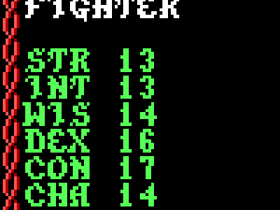
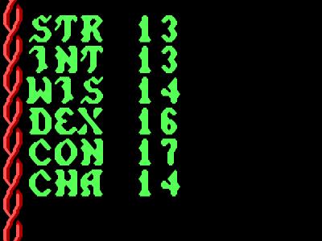
The game runs on its own thread and knows nothing of this; the display thread simply photographs the EGA model on each
screen refresh (app/App/main.swift). Everything that makes the picture what it is happens on the CPU exactly
as it did in 1988, which is also what allows frames to be compared bit for bit.
The DOS program depends on the PC's clock hardware in three ways, and each is handled separately.
| What the game expects | Why | In the Mac app | In test runs |
|---|---|---|---|
| The BIOS tick, 18.2 times a second | Turbo Pascal calibrates its Delay loop by counting how often a loop spins in one tick | The emulator fires the timer interrupt from the Mac's clock and holds the emulated CPU to a steady speed, so the calibration is meaningful | A tick every fixed number of emulated instructions |
| Its own timer at 236.7 ticks a second | The game reprograms the timer chip and drives its sound effects from the interrupt | Same interrupt, at whatever rate the game set | Same, scaled to the instruction count |
| The DOS time of day in 1/100 s | Title-screen waits, animation frame timing, menu time-outs, seeding random numbers | Answered from the Mac's clock | Advances a fixed 7/100 s each time it is asked |
The test runs use false time deliberately: with nothing depending on the real clock, the same key script gives exactly the same frames every time, which is the only reason frame-by-frame comparison works.
In the native build no instruction of the game runs, so nothing marks time by executing. In the app,
Delay sleeps for real, and timer interrupts (the sound sequencer's 236.7 Hz) are served whenever C code
calls a BIOS or DOS service or waits. In the headless emulator time is still counted in instructions, so the C
Delay spends exactly the instructions the original's loop would have, running the interrupts that fall due
on the way, and Crt's start-up calibration of that loop is computed on the same rule. The calibrated count comes out
identical to the original's (33).
The last original code to be translated was Turbo Pascal's own run-time library and the main program:
Each was checked against the original in one of two ways: the comparison tests, or, for routines the game reaches
too rarely to test that way, a selftest run in the untouched original. The selftests compared 20,000
random real-number operations, 30,000 random Val strings, and 200,000 ticks of the sound sequencer
through 67 effects, port writes and state included. All were identical.
The app (app/build.sh) compiles the platform layer of re/emu/emu.c with
NATIVE_ONLY, which leaves the 8086 instruction decoder out. Reaching original code would be a fatal error
naming the address; it does not happen. What remains of the emulator in the app is what any port of a DOS game needs:
The headless emulator keeps the interpreter, because it is the oracle: cmp.sh runs the original under it,
then the port, and now also reports any instruction interpreted in the port. Across the suite there are none.
Where the original reads memory it never set, the port has to choose a value. These are the only places where it does something the original's bytes do not determine:
| Where | The original | The port |
|---|---|---|
| ECL CLOCK (1D3F:2AC1) | uses an unset stack byte as the operand number | operand 1, as the one script using it ("ECL CLOCK 1") means |
| ECL SPELL (1D3F:2C03) | never clears its "found" flag | clear |
| Hold Person on more than four targets | unset save penalty | none (as for three or four) |
| Strength on a target with no fighter, cleric or thief levels | adds an unset value | adds nothing |
| Restoration when no class may regain a level | unset class index | no effect |
| Outdoor battlefield, the one picture in no terrain group | unset terrain | open ground |
| Caster level for a spell class above 2 (none exists) | unset | as class 2 (level 12) |
| Strength above 25, or 18 with more than 100 (impossible) | whatever was in a register | 25 and 18/00 |
| Field-of-view directions above 8 (none occur) | reads past its table | all round |
| Crt's console output and line input (only for start-up error messages) | BIOS text output | written to the log |
Treasure Share with no one to share among is not in the list: the original divides by zero and stops with run-time
error 200, and so does the port. The CLOCK and SPELL tests (t_clock, t_spell) give the
original the intended values on its stack (script command pokestk), and then both builds agree.
The same C runs on Windows 10 and 11 with a front end of its own, app/Windows/winmain.c, the
counterpart of the Swift code on the Mac:
shader-error.txt beside the program. If there is no Direct3D 12 hardware, Microsoft's software renderer (WARP) is used.HKEY_CURRENT_USER\Software\Pool of Radiance.%APPDATA%\Pool of Radiance, recordings in
%APPDATA%\Pool of Radiance Recordings.app/build_windows.sh cross-compiles everything on the Mac with MinGW-w64 (brew install
mingw-w64), linked statically. The result is build/windows/Pool of Radiance/ (an 840 KB
PoolOfRadiance.exe beside its GameData folder) and a zip of it. It needs only what Windows
10 and 11 ship: Direct3D 12, DXGI, the D3D shader compiler, winmm and the universal C runtime.
It has been run on Windows 11, Smooth Picture included, and works.
A machine snapshot cannot be taken in the app any more: nearly all of the game loop is now translated C, so at almost any
moment a C routine is part-way through and its state lives on the Mac's own stack, not in the emulated memory. Instead the
app records each session so that it can be played again exactly, later, on the development machine. Each launch writes a
folder in ~/Library/Application Support/Pool of Radiance Recordings/ (the newest 20 are kept):
| File | What it holds |
|---|---|
start-saves/ | The saved games as they were when the app started. |
keys.txt | Every key the game took, with the number of keyboard checks that had found nothing since the key before it (key 0x1c0d 37). It is a script for the headless emulator. Lines starting with # give the wall-clock time of each battle, each round and each mark. |
clock.txt | Every answer the DOS time-of-day call gave, run-length coded (about 3 MB an hour). |
NNNN round HH.MM.SS.png | The screen at the start of each battle round. |
markNN HH.MM.SS.png, markNN saves/ | What the player saw at each Debug > Mark a Problem, and the saved games at that moment. |
Recording the keys alone would not be enough, because the app is driven by real time. The program's behaviour depends
on time in only three ways it can observe: the clock readings, how many times a keyboard check came back empty before a key
arrived, and Turbo Pascal's Delay, which only burns time. Replaying the first two exactly puts the game on the
same path the player took. re/emu/replay.sh <folder> plays a recording through the untouched original and
through the port and compares them as cmp.sh does. That gives a frame at every battle round and every mark,
and a memory dump at each mark. The first difference shows where a translated routine went wrong. If the original goes
wrong in the same place, the bug is the 1988 game's.
Each mark is placed in keys.txt by three counters: empty keyboard checks since the last key, clock readings,
and Delay calls. The replay takes its frame when all three are reached. Tested by recording sessions in the app
with scripted keys, through to a fight, and replaying them. The original and the port agreed throughout, and every mark
frame was pixel-identical to the app's own screenshot except two. A mark made during the monsters' turns, or while the game holds a combat
message on screen, comes out at the next point the replay can see (the end of that pause, or the next party member's
turn), because those pauses are timed by the hardware timer, which is not recorded. The
other was a campfire animation frame. The recording header names the commit the app was built from, and the port replayed
should be that one.
A plain account of the work, in the order it happened, including the wrong turns. Each step names the files it produced.
re/emu/emu.c).START.EXE turned out to be compressed with Microsoft EXEPACK and
carried no relocation table of its own. Wrote re/unexepack.py to unpack it and rebuild the table.re/flatten.py to link every overlay permanently into one
program, and checked that the result draws exactly the same frames as the original.re/ghidra/), and wrote small tools to print one
routine (re/fn.py) and to profile which routines are called most (re/prof.py).app/).re/emu/libtest.c) or open
the window in the background.re/mapdump.py).re/route.py), learned the door table distinguishes locked doors, bashed one, and met the kobolds. That gave
the combat test script.re/dax.py, the gallery).re/ecl.py, re/out/ecl/).re/spk2wav.py).STING developer switch, and a recolouring routine whose "all frames"
option only ever does the first frame.The mechanism: the emulator can run a C function in place of an original routine (port/hooks.c). The C code
works on the same memory image the original used, so translated and untranslated routines can call each other freely. After
every change, re/emu/cmpall.sh plays thirty-three key scripts through the untouched original and through the mixed
build and compares every frame, the game's memory and the save files.
| Unit | What was translated | What went wrong on the way |
|---|---|---|
Pictures (gfx.c) | Load, decode to bit planes, draw, merge (plain, and clipped with save-under), mirror, recolour, fill, flush the back buffer through the hidden EGA page | Missed that flushing also resets the dirty-row tables; the memory comparison caught it |
Data files (dax.c) | Find a block in an archive, unpack it | The original stores Turbo Pascal's file-probe result in a global as a side effect; one byte of memory differed until that was copied |
Text (text.c) | Characters, strings, word-wrapped printing, clearing, prompts, text entry | Text entry is a Pascal function returning a string, which must leave the result's address on the stack; the first version removed it. A checker (re/checkhooks.py) now compares every replacement's stack clean-up with the original's |
Keyboard (input.c) | Reading a key, Ctrl-S, the hidden developer keys | Nothing; this is where the developer switch was found |
Menus (menu.c) | Bottom-line menu, Yes/No, scrolling pick-lists and their nine helpers | The decompiler shows set-membership tests with the sense unclear, so each one was checked in the assembly |
Scene pictures (scene.c) | Loading animations, drawing them and portraits | The first hook had its arguments in the wrong order and quietly fell back to the original on every call, so the tests passed while testing nothing. The comparison now reports any replacement that declines a call |
3D view (view.c, map.c) | View redraw, background, wall and event look-ups, the piece stamper, the back-to-front renderer, the Area map, the tile stamper, tile-set and icon loading | The renderer matched on the first run. My first reading of the four colour variables had them mislabelled (I took the sky colour for a wall-set number) until the background routine showed what each one fills. Later, three of four new replacements had their parameters in the wrong order and every test failed at once; parameter order remains the commonest slip, because the decompiler lists a Pascal routine's parameters last-first |
Character sheet (sheet.c) | The sheet, its three helper routines, and the View menu under it | The code matched first time, but my first test of the menu did not test it: I pressed S for Spells on a fighter, who has no such item, and Esc then left the screen, so the Trade and Drop keys went to the exploring menu instead. The frames still matched, because both builds did the same wrong thing. Looking at the pictures showed it, and the script was rewritten until each of the four branches was on screen |
Camp (camp.c, rest.c) | The camp menu, Rest, the rest-time rule, the rest screen with its time-setting menu and the five-minute loop, the Magic menu, Cast, Memorize, Scribe, Display, Alter | Again the code was right and the test was not: it took five tries to write keystrokes that actually freed a spell slot, memorised a spell and reached Rest with a time other than zero. Each failed try still "passed", which is why every new test's pictures get looked at |
Script interpreter (ecl.c, ecl_ops.c) | The run loop and dispatcher, operand fetch, text unpacking, variables through the old-address map, character-field translation, text variables, script loading, script menus, 55 opcodes | Nothing has failed a comparison yet. Offsets wrap around at 64 KB in the original's pointer arithmetic, and the translation has to do the same. A few original code paths return a variable that was never set; the C version returns 0 there, which no test has shown to matter. Ghidra had missed 116 routines, several opcode handlers among them, until functions were created at every unclaimed routine prologue (re/ghidra/scripts/CreateFuncs.java) |
POOLRAD_WHEEL=1 to get it back). For a while it was not: once the
question itself had been translated, its hook was registered ahead of the one that skips it and won. Found while testing
session recordings and fixed; a replay makes the original skip it too (POOLRAD_SKIP_WHEEL).~/Library/Application Support/Pool of Radiance/ instead of a SAVE folder beside the game.re/emu/emu.c into its own files. Neither changes what the game does.| Path | Contents |
|---|---|
original/ | The DOS game files exactly as downloaded, plus the code wheel scan |
re/ | Unpacker, flattener, emulator, Ghidra scripts and output, test scripts |
port/ | Native C game code: ega.c (model of the EGA card), gfx.c (picture routines), dax.c (archive loader), text.c (text drawing), input.c (keyboard), menu.c (menus), scene.c (scene pictures and portraits), ecl.c and ecl_ops.c (script interpreter and exploration loop), view.c and map.c (3D view, Area map), move.c (commands, movement, doors), gametime.c (the clock), hud.c (roster, status line, screen layouts, frames), camp.c (camp menu), hooks.c (which originals are replaced), poolrad.h (how game memory is addressed) |
app/ | The Swift + Metal Mac app and build.sh; the Windows front end in app/Windows/ and build_windows.sh |
build/ | Build output: Pool of Radiance.app and windows/ with the Windows folder and zip (not committed) |
docs/ | This page, its screenshots, the picture gallery and sound samples |
tools_export_public.sh | Makes the copy that goes to GitHub (see below) |
The project is developed in a private working repository that holds the whole history of the port, including the original game files it is tested against. What is published on GitHub is a copy made from it:
| Repository | Files |
|---|---|
AI-Concord/pool-of-radiance-port | 255 |
AI-Concord/conflict-port (companion port of Conflict, 1990) | 80 |
The GitHub copies hold only this project's own work. The port, the Mac and Windows front ends, the build scripts, the emulator and its test scripts, the analysis tools and this page are in them; the original game is not:
| Left out | Pool of Radiance | Conflict |
|---|---|---|
| Game files and saved games | original/ | original/ |
| The game's code, decompiled or disassembled | re/ghidra/out/, re/out/ (the flattened program, script listings) | re/ghidra/out/, re/nd_*.txt, re/gfx_nd.txt |
| Data, pictures and sounds taken from it | docs/gallery, docs/audio, the code-wheel scan, battle snapshots and test copies in re/emu/ | port/conflict.dat (its data segment), re/strings.txt, re/image.bin |
| Icons (made from the title art) | app/Resources/, the Windows icon | app/Resources/, win/res/ icons |
To build from a GitHub copy you need your own copy of the DOS game in original/; each README says so.
The documentation screenshots stay, as illustrations. One caveat stays too: the C in port/ is a
translation of the original programs, not just a new program with the same behaviour.
The working repositories are never pushed themselves, because their history contains the game files. Instead,
tools_export_public.sh in each project copies the tracked files minus everything above into a separate
repository in ~/github-export/, and that is what is pushed. Its history starts with a single commit; the
full history stays on the Mac. To publish an update:
./tools_export_public.sh
cd ~/github-export/pool-of-radiance-port # or conflict-port
git add -A && git commit -m "..." && git push